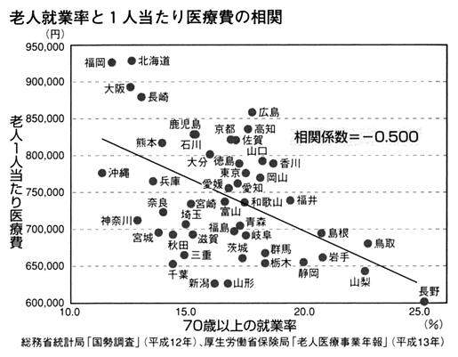

| ＜疑う力＞の習慣術 (PHP新書) | |
| 和田秀樹 | |
| PHP研究所 (2004) | |
〈疑う力〉の習慣術
和田秀樹
まえがき
私はある時期から、日本の子供たちの学力低下や、文部科学省のゆとり教育政策に問題意識をもち、それに対する批判や論考を重ねてきた。
その際に、よく言われたことは、「では、詰め込み教育に戻ればいいのか」という反論であった。
そのような背景に加えて、私自身、学歴の上では、というか偏差値の上では、日本で最もレベルの高い大学学部を出ているが、今ひとつ、自分の頭のよさ、とくにこれからの時代に通用する「頭のよさ」というものに自信がもてないできた。だから勉強で、とくに旧来型の受験勉強で頭がよくなるのかということが、自分の中でも大きなテーマであり、そのことについて考えることは多かった。
そのうちに、昨今、国際的に「知識社会」ということばが用いられるようになってきて、情報（これは頭の外にある）
収集能力以上に、知識（これは頭の中にある）
が大切になってきていることを実感していたので、「詰め込み教育」という形で知識を増やすことそのものは悪いことではないと考えるようになっていった。
しかし、いっぽうで知識が多いだけでは、社会で勝ち残れないのも事実である。
そこで、たまたま勉強を始めていた認知心理学の考え方に照らし合わせてみた。この認知心理学の世界で頭がいいということは、問題解決能力が高いことである。問題を解決するためには、知識をもっているだけでなくて、それを用いて推論をする必要がある。しかしながら、知識が豊富でないと幅広い推論ができない。つまり、「詰め込み」で知識をたくさん入力しておくことそのものはよいことなのだが、それをそのままひけらかすのではなく、それを加工し、それを使わなければいけないのである。
このことについて、さらに論考を加えて、このＰＨＰ新書で『大人のための勉強法』のシリーズとして刊行したわけだ。
おかげさまで、この問題提起が支持されたのか、私の『大人のための勉強法』はベストセラーになった。そのおかげで、いろいろな人と対談をさせてもらったり、知己を得ることができた。
その中で、私がさらに「頭のよさ」を考える上で、最も影響を受けたのが、失敗学を提唱する畑村洋太郎東京大学名誉教授と、ミスター円として知られる、元大蔵省財務官の榊原英資慶應義塾大学教授である。
この二人の方とは意気投合するところがあって、畑村先生とは『失敗を絶対、成功に変える技術』（アスキー）
、榊原先生とは『本物の実力のつけ方』（東京書籍）
という共著も出させていただいたが、そこで私はそれぞれはっとさせられたことがある。
畑村先生にはっとさせられたのは、これからの時代は、問題解決能力だけではダメで、問題発見能力が必要だとしきりに強調されていたことだ。問題発見のためには、失敗は避けて通れないものだし、失敗から学ばないといけないということだった。
榊原先生に影響をもっとも受けたのは、長年の国際金融、そして為替というおそろしく動きのある生き物のようなものを対象にして、彼自身が痛感し、そして元アメリカ財務長官のロバート・ルービンも語ったという「世の中に確かなものはない」ということばである。
私自身、実は世の中のパラダイムの大きな変化を痛感していたので、両者のことばは胸に響いた。
実際、二〇世紀はさまざまな学問が発展したが、今世紀の課題は、世の中が学問どおりにいくほど甘くないことだということだ。心理学の理論どおりに人が動くとは限らないし、経済学の理論どおりに経済が動くとは限らない。
心理学も経済学も二〇世紀に大きく発展し、人間の心や経済の動きの法則性にかなりよく迫った。しかし、人間やお金の動きには、あまりに大きな複合要因がからんでしまうため、最後のところでは理論どおりに動いてくれない。そこで、複雑系なる考え方が出てきて、より混沌としてきてしまう。
医学にしても、お金の限界や倫理上の限界があって、このまま直線状に発展していくことが難しくなっている。学問をそのまま信じる、技術の発達をそのまま信じるのが、それほど楽観的でなくなってきたのだ。こんなことは人類が初めて体験することだろう。
もう一つ、人類が初めて体験する異常事態は、人口の減少である。
人口が減少すること自体は自然災害や戦争、凶作などを通じて何度か経験したことがあるかもしれないが、これから日本を初めとする先進国では、恒常的に人口が減ってくる。先進国の唯一の例外はアメリカ合衆国だけなのだ。
人口減少以上に未曾有の体験となるのは、慢性的な消費不足だと私は考えている。すでに日本では消費不足の不況と言われて久しいが、ほとんどの先進国で、消費を上回る生産が可能になっている。今後、生産性は上がり続けることが予想されるのに、人口が減るのでは、ますます消費不況がひどくなる。だとすれば、生産性を上げるとか、勤勉だとか、頑張れば報われるといったような、人間が疑うことのなかった生き方や価値観を疑わないといけなくなる。
学問の限界性と人口減少社会の消費不足。これらはまさに、絶対に正しいものがなくなることを意味する。また作れば売れるという時代でなくなったのであれば、何が売れるかをしかけていく必要も生じる。問題発見能力が必須となってくるのだ。
だとすると、知識を詰め込むだけでは足りないばかりでなく、私が『大人のための勉強法』で提唱したように、知識を使うだけ、つまり問題が解決できるだけでも足りない時代に入ったのかもしれない。
そこで、必要となってきたのが、「知識を疑う能力」なのではないかというのが、私の提言である。
世の中に確かなものがない、新たな発見が必要な時代に入ってきているというのに、日本のマスメディアの動きを見ると、「絶対の正義」や「絶対の正しさ」はますます強調されてきたようだ。
小泉首相の一回目の訪朝以来、北朝鮮は絶対悪となり、ほんの僅かでも北朝鮮の肩をもつような発言をしようものなら、マスコミは袋叩きにするようになった。
そのほか、さまざまな報道を見る限り、何らかの形でマスコミがバッシングするような人間は絶対悪として扱われている。
あるいは、市場原理は絶対善で、共産主義、社会主義的な発想（貧富の差の緩和や福祉）
が絶対悪のように見なされる。環境問題や禁煙、あるいは男女の性差をなくすことなど、世の中に次々と「絶対善」も作り出され、それへの批判は事実上、許されない（この傾向はむしろ、アメリカのほうが強いかもしれないが）
。
しかしながら、最近の心理学や精神医学で（これも絶対に正しいというつもりはないが）
、最もまずいと言われるようになってきたものの考え方は、白と黒とをはっきりわける二分割思考と言われるものである。世の中には完全な悪人や完全な善人のほうが珍しいし、完全な敵や完全な味方というのもまずいない。むしろほとんどの人はグレーであって、白が強いか黒が強いかの違いだけである。
ちょっと自分のことを批判しただけで完全な敵と思ってしまうようでは、人間関係など作ることはできないし、自分に少し優しくしてくれただけで完全な善人と思っているようなら簡単に詐欺師に騙されてしまう。人間にはよい面もあるし悪い面もある、完全な敵でも、完全な味方でもないと思ってつきあわないと対人関係はうまくいかない。
また、このような二分割思考はメンタルヘルスにも悪い。ちょっとうまくいかなかったくらいで完全な失敗と思うようでは、簡単にうつ状態になってしまうし、うつが少しよくなっても、まだ完全でないと思うようでは、なかなかうつを脱け出せない。
私がここで何を言いたいのかというと、強力なマスメディアや世論を背景にした絶対善や絶対悪に対して疑う力をもたないと、簡単に二分割思考に陥ってしまうということである。そのことに警句を述べたかったのだ。
もう一つの問題は、疑う力がないとリスクヘッジができないという点である。
国際情勢一つとっても、東西冷戦の時代と違い、これからの時代は、もっと敵味方がころころかわるかもしれない。南北の対立、宗教の対立、ＥＵとアメリカとの対立、中国とアメリカの対立、アジアと西欧の対立、そしてテロとの戦いなど、さまざまな種類の対立がヒートアップしてきて、どこかの対立に巻き込まれると昨日の味方は今日の敵になりかねない。
たとえば、イラク問題一つとってみても、反米感情の高まりがイスラム世界全体に広がり、ヨーロッパや中国がそれをビジネスチャンスとみて、イスラム世界の人たちがアメリカ抜きで何でも買えるという状況が出現すると、日本がアメリカに肩入れしすぎていた場合、テロの標的になるだけでなく、石油が買えないということすら起こりかねない。
北朝鮮問題にしても、アメリカの政権が変わって、アメリカが北朝鮮の安い労働力に注目すれば、核放棄を約束させる代わりに、米中国交正常化のときのように、米朝国交正常化が日本の頭ごしに行われて、中国の一〇分の一の人件費で、ＧＭやデルコンピュータの工場が北朝鮮にいくつもつくられるなんてこともあり得ない話ではない。
こんなことは、かなり確率の低い妄想のように思われるかもしれないが、世の中に確実なものはないという発想に立つと、「絶対に」あり得ない話とは言えない。
だからといって私は、自衛隊のイラク派遣をやめろとか、北朝鮮と早めに仲直りしろと言いたいわけではない。
そうではなくて、その可能性を疑うことができるかどうかが大切だということだ。疑うことができたら、万が一のときの対処ができる。つまり、リスクヘッジができるということが言いたいのだ。
たとえば、政府が自衛隊をイラクに派遣したら、民間のほうはなるべくボランティアでいいからイラクの支援をしておけば、「政治家はアメリカの言いなりだが、民間にはイラクの味方、イスラムの味方が多数いる」ことを示すことができる。日本が嫌われ者にならずに現政権が嫌われ者になるようにすれば、首のすげかえだけで、非常事態を乗り切ることができる。
北朝鮮と今仲直りする必要はないが、情勢がどう変わるかわからないことに備えて、親北朝鮮の人間も一応温存しておくだとか、リスクヘッジの方法はあるはずだ。あるいは、ブッシュとだけ、現政権とだけ仲良くするのでなく、アメリカの民主党ともパイプをつないでおくというのも立派なリスクヘッジだ。
疑う力があれば、対立軸が急に変わっても、リスクに備えることができる。
これは、身近な問題でも同じことだ。疑う力があれば、社内の非主流派ともパイプをつないでおくことで、社内事情が変わっても生き残れるだろうし、たとえば自分の会社がＭ＆Ａにあったり、外国人の経営者にかわっても生き残る方法を用意することができる。
もちろん、疑い出せばきりがないが、前述のようなパラダイムの変化を考えると、疑わないといけないことはいろいろあるだろう。
確かにマスメディアは、絶対の正しさ、絶対の正義があるかのような報道を続け、異論や少数派はどんどん肩身が狭くなっている。いまどき、共産党や社民党の支持をするなどというと、どうかしたのかといわれかねない。だが今の時代こそ、少数意見も一応殺さずにいかしておくのが「備え」だと私は信じている。
このような社会情勢であっても、私は、この問題について、実は喜んでいることがある。
それは、『バカの壁』（養老孟司著、新潮新書）
のベストセラー化だ。もちろん、ブームといえばブームなのだろうが、そのロングセラーぶり、また続編の売れ方を見る限り、内容が支持されたのは間違いない。
この本は、ものごとをきめつけること（たとえば地球温暖化の原因はＣ
にあるのではなくて、「Ｃ
と推定される」と言いなおすべきだと冒頭に書かれている）
のばかばかしさや、きめつけがあると人間は聴く耳をもてなくなってしまうというような認知心理学的にも妥当な話が、繰り返し述べられている。
この本が空前のベストセラーになったのは、世の中があれこれときめつけられ、「絶対善」と「絶対悪」が横行している中で、まさに快挙といえる。おそらく、「きめつけ」すぎる今の世の中に嫌気がさしている賢明な大衆が、この本に目を覚まされたのだろう。あるいは、私のように、息苦しさを取り除いてもらったような感じになったのだろう。
このように考えると、疑う力のニーズは、確実に高まってきているようだ。
もちろん、本書が『バカの壁』のように売れると思えるほど、私は疑う力のない能天気な人間ではないつもりだが、本書の内容も、疑う力のつけ方という実用性だけでなく、ある一定の（どのくらいいるかわからないが）
人たちには、「それもそうだ」と思ってもらえる内容だと自負している。もちろん、こんな風に疑えると言っているだけで、全部信じて欲しいとは思っていない。それでは、逆に疑う力を奪ってしまうだろう。
メディアが「疑う力」を奪っている
近頃は、メディアの影響力が非常に強くなっている。特に、映像メディアであるテレビの力によって世論が動かされているような印象が強い。テレビは受け身のメディアだから、テレビをつけているだけで自然に情報が入ってくるが、問題はそこから入ってくる情報の質である。
各局ごとに多様な観点からの情報が報道されていて、自分自身でそれらを取捨選択して判断する状態にあれば、テレビは重要な情報源の一つと言えるだろう。しかし、最近のテレビは、どのチャンネルを見ても同じようなニュースが流れていて、同じような顔ぶれの解説者によって、同じような意見が述べられている。これでは、知らず知らずのうちに影響を受けて、テレビで言われている意見が、あたかも自分自身の考えであるかのようになっていく。テレビによって「正義」と「悪」が決まってしまっている側面があるとすら言えるだろう。
ここ数年のテレビ報道を見ていると、その傾向はいっそう強まっていると言えるのではないだろうか。たとえば、対テロ戦争に関する報道では、すべてのチャンネルで、米国の同時多発テロ事件の映像が繰り返し報道され、「アルカイダが悪の根元である」という情報が連日流された。我々は知らず知らずのうちに、「アルカイダが悪の根元である」という認識を植え付けられてしまった。そのアルカイダを支援したアフガニスタンのタリバン政権も悪とされたため、アフガン戦争は多くの日本国民によって支持された。イラク戦争に関しても、イラクの大量破壊兵器保有疑惑が連日報道され、日本も米国に協力すべきだという世論が起こり、最終的に人道支援目的で自衛隊が海外派遣された。対北朝鮮問題に関しても、北朝鮮の拉致犯罪が明らかになるにつれ、テレビ各局で対北朝鮮強硬論が主流になった。
この間、少なくとも私が知る限り、タリバンにも理があるような異論を述べたメディアはないし、彼らが直接テロに関わっているのかを疑うメディアもなかった。イラク戦争に反対したメディアはあったが、イラクのフセイン政権の存在意義を述べたメディアはなかったと記憶している。
北朝鮮問題に関しても、かつては一部のメディアの中では「拉致」という言葉を使用することすらタブー視されていたくらいなのに、小泉首相訪朝以降は、どのチャンネルも新聞も一斉に北朝鮮と金正日総書記を非難し始め、少しでも北朝鮮寄りの意見を言おうものなら、袋叩きに遭いかねないような状況になった。以前は、左寄りのメディアと右寄りのメディアが比較的はっきりと分かれていて、左寄りのメディアは北朝鮮を擁護する報道をし、右寄りのメディアは対北朝鮮強硬論を報道していたが、小泉首相訪朝以降は、ほぼ対北朝鮮強硬論が主流になった。
私は、アルカイダを擁護しろ、と言うつもりはまったくないし、タリバン政権やフセイン政権や金正日政権を擁護しろ、と言うつもりもない。しかしながら、それらの政権を擁護する意見があり得たり、実際に支持する人間がいるという事実も知っておかなければ、我々は妥当な判断を下せないのではないだろうか。アルカイダにはアルカイダの言い分がある、フセインにはフセインの言い分がある。金正日には金正日の言い分がある。彼らの意見がまったく筋の通らない意見だとしても、それらの意見を無視するのではなく、それらの意見をよく聞いた上で、「やはり彼らは間違っている」と判断することも可能なはずだ。
今のメディアにはそういう姿勢がほとんど見られない。最初から、彼らの意見をまったく報道しないようにしているかに見える。私はその点を非常に危惧している。テレビや新聞は、我々から、情報を疑う力を奪っているように見える。少なくともテレビや新聞などメディアの報道を鵜呑みにするのではなく、一度疑ってみる姿勢が知的トレーニングとして必要であるように思われてならない。
国内ニュースに関しても、国際ニュースと同じように注意深く見ていく必要がある。特に、スキャンダル報道や不祥事に関する報道などについて、我々はもっと疑う力を発揮すべきだろう。これらの報道を見ていると、片側の意見しか流さないような傾向が顕著だからだ。
たとえば、名古屋の刑務所で犯罪受刑者が看守から暴力行為を受けた事件が問題となった際に、すべての大手メディアがそれを取り扱った。各メディアとも一斉にその蛮行を非難したが、「では、受刑者が暴れたときに看守が一切暴力を振るえなかったらどうなるのか」という視点での意見を述べたメディアは一つもなかった。受刑者の人権を守ることは必要だが、刑務所内の秩序を守るという視点も当然必要だ。右寄りのメディアが一紙くらいそうした視点での論調を発表してもよかったと思う。
小中学校で、いじめを発端にした凶悪事件が起こったときも、被害者を擁護し、加害者を非難する論調が一斉にメディアで流される。そんな報道の際に、コメンテーターたちが、「被害者の側にも非があったのではないか」というようなコメントをしようものなら、袋叩きに遭いかねないような状況だ。「被害者は一〇〇％かわいそうな子供で、加害者が一〇〇％悪い」という観点からのニュースばかりで、被害者の側に非があったのかどうかを調べて報道されることはない。
政治家のスキャンダルでも同じだ。二〇〇四年の初めに、民主党の古賀潤一郎議員の学歴詐称問題が取り沙汰されたとき、福田康夫官房長官（当時）
は「ウソつきは泥棒の始まりですからね」と鬼の首を取ったように発言し、世論も「政治家としてウソをつくことは大問題である」という流れになったが、果たしてこの問題はそれほど大きな問題なのかと私は思った。政治家でも、一般の人でも、ウソをつかない人のほうが少ないはずだ。ウソをつくことがいいことだと言いたいわけではなく、学歴詐称をした議員を、極悪非道の罪人のように扱う論調に疑問を感じたのである。法的な問題は裁判等で解決すればいいことだし、政治的道義的責任に関しても、きちんとした謝罪があれば、極悪非道の犯罪者のような扱いで世間が過剰な社会的制裁を与えることはいかがなものかと思う。
女優の江角マキコさんが、社会保険庁の広告に出たあとに、年金未払いが発覚したときもそうであった。あらゆるマスコミが一斉に江角さんを責め立て、民主党の菅直人代表（当時）
は「国会に呼ぶべきだ」とまで述べていた。まさに重大犯罪人のように世間から扱われてしまったのだ。
その後、福田官房長官をはじめ、多数の現役閣僚、年金を主管する厚生労働副大臣、厚生大臣も務めた橋本龍太郎元首相、そして江角さんを非難した民主党の菅代表、神崎武法代表ほか公明党幹部たち、さらに社民党議員、共産党議員など、多くの国会議員に年金未納期間があったことが発覚し、職を辞した人もいる。これだけ多くの政治家に年金未納期間があったことがわかったあとには、「あの江角バッシングはいったい何だったのか？」と思った人も多いはずだ。マスコミが一斉に「江角が悪い」という論調を作り出し、それに影響された国民とともに過剰な批判をしてしまった。
企業不祥事の場合も似たようなところがある。雪印事件で、雪印グループは世間からバッシングに遭い、結果的に雪印食品は会社を解散せざるを得ないところまで追い込まれた。各メディアが連日、雪印に対する大バッシングを繰り広げたためだ。その後、日本ハムをはじめ、食品業界の不正や不祥事が次から次へと発覚して、「なぜ雪印だけがあれほど叩かれたのか」と感じた人もいると思う。
要するに、今のメディアの状況は、「絶対善」と「絶対悪」を作りやすい状況で、少しでも悪い要素があると、スケープゴートにしてしまって、全マスコミが徹底的に叩いてしまう。そういう状況にある。
これは非常に危険な状況だ。物事には善と悪だけではなく、グレーの部分もある。というよりも、グレーの部分がほとんどであって、絶対善、絶対悪などというものはまずない。にもかかわらず、マスコミからの毎日の情報に左右されて、つい私たちは「絶対善」と「絶対悪」に分けて考えてしまいがちだ。マスコミで流されるニュースの影響力が大きい時代だからこそ、よりいっそう「疑う力」が欠かせないと言えるのだ。
私たちは、自分の価値観を中心に世の中を見ている。しかし、自分の価値判断基準が本当に正しいかどうかを疑ってみることも必要だ。たとえば、私たちは、イスラム社会を見て、「あれはひどい。男女は平等であるべきではないか」と感じるはずだ。しかし、もしかすると、イスラム社会ではある種の男女差別的に見えるような形式を続けているほうが、彼らの文化の中ではうまくいくのかもしれない。男女に差をつけたほうが、もしかすると、女性も幸せかもしれない。西側社会の価値観でイスラム文化の社会を断じることはできないのだ。
これは、独裁国家か民主主義国家かという点においてもある程度言えることだ。我々は独裁が絶対悪で、民主主義が絶対善と考えており、この価値観は疑ってはいけないもののようになっている。しかし、独裁政権の下にいる人たちと、民主主義の下にいる人たちのどちらが本当に幸せなのかはまったくわからない。独裁政権下にいる人々で、民主主義というものをまったく知らない人にとっては、民主主義を知らないことが幸せにつながっている可能性もある。むしろ、権力者を素直に尊敬することのほうが、心の不安が少ないかもしれない。これは主観的な問題にとどまらない。社会主義政権が崩壊したロシアや東欧はいまだに経済が立ち直らず、高齢者は福祉の恩恵に与れない。しかし、独裁を続けている中国やベトナムはむしろ経済の成長も著しいし、治安もいい。明治政権下の日本を見てもわかるように、発展途上の時期は独裁のほうが国の発展がうまくいくかもしれないのだ。
先進国の価値観、西側諸国の価値観が必ずしも正しいわけではない。「何が幸せか」という基準に立てば、その形は多様に存在すると考えられる。あるいは純粋にどちらが発展するか、どちらが得かということでもそうなるだろう。民主主義体制の下でも不幸な人もいれば、独裁国家体制の下で幸せになれる人もいる。男女平等社会で不遇をかこっている女性もいれば、男女差別社会に見える中で、幸せに暮らしている女性もいる。どのような価値観にも、絶対的に正しいというものはないのだから、一度自分が信じている価値観を疑ってみることが必要であると思う。私はこれを哲学として論じているわけではない。これが頭のトレーニングになると思っているのだ。
哲学的な議論を抜きにしても、政策論争や学問の世界においては、疑う力がいっそう重要になっていると私は考えている。それは、理論や学説を絶対視する考え方があまりにも広がりすぎてしまっているからだ。
理論を絶対視してしまうと、どんな言い方でもできるものだ。経済に関して言えば、バブル崩壊以降、「財政出動」か「構造改革」かという議論がずっと続いてきたが、どちらの立場に立ったとしても、理論が正しいことを前提にすると、いくらでも言い様はあるのだ。
たとえば、「財政出動で経済はよくなる」という理論を信じている人たちは、財政出動しても経済がよくならないときに、「財政出動の規模が足りないから経済がよくならない」、「財政出動のタイミングとスピードが悪いから、経済がよくならない」、「財政出動しても、地方にまでお金が行き届いていないからダメなんだ」、「財政出動していなかったら、今よりさらに悪い状態が続いていただろう」というような意見を言うことが多い。
逆に、「構造改革で経済がよくなる」という理論を信じている人たちは、構造改革をしても経済がよくならないときに、「構造改革が足りないから経済がよくならない」、「構造改革のやり方が悪いから経済がよくならない」、「構造改革には痛みが伴うものだ」、「構造改革の成果が出るまでには時間がかかる」などの意見を言う。
いずれも、自分の理論が正しいことを前提にしていて、自分の理論を疑おうとしていない。理論があくまでも正しく、現実のほうが間違っているという見方をしてしまっている。これでは、議論がかみ合うわけはなく、むなしい平行線で終わってしまう。
こうしたことは、私が専門とする心理学の分野にも言えることだ。フロイトが無意識というものを発見して以来、心理学者たちが人間の心に対して非常に僭越なことを言うようになってしまった。たとえば、患者さんを精神分析したときに、「あなたは無意識の性欲によって動かされていて、今は母親のおっぱいが欲しくなっているんだろう。だから、こういう行動をしているんだ」などと解釈をする。患者さんが「母親のおっぱいを吸いたいなんて思っていません」とか「母親に甘えたいなんて、思っていません」と言うと、治療者は「これは抵抗という現象が起こっているから認めようとしないんだ。抵抗が起こるということは、本当のことを言われたからだ。人間の精神というものは当たっているほど無意識的に認めたくなくなる。だから、私のこの解釈は正しい」と考える。逆に、患者さんが「先生の言うとおりかもしれない。私はおっぱいを求めているような気がします」と言うと、治療者は「うん、確かに私の解釈は当たっている」と自説の正しさを肯定する。
要するに、患者さんがイエスと言おうが、ノーと言おうが、「自分の解釈は当たっている」と考えてしまうのだ。結局のところ、理論のほうが正しいということになって、そこには患者さんの心は存在していない。患者さんの心が最優先ではなく、患者さんの心よりも理論のほうが重視されてしまっているのである。
このように学問体系が発達してくると、現実には学問を超えた複雑な現象がいくらでも起こっているにもかかわらず、それらの現象を学問に当てはめて考えようとしてしまって、現実を軽視しがちになる。「理論どおりになっていない現実がおかしい」ということになって、学問を疑うことをしなくなる。つまり、学問に振り回されてしまっているわけだ。
二〇世紀に学問体系が発達してきたことによって、確かに、社会現象や経済現象、自然現象、人間の行動や心理などが、いろいろな形で理論化されてきて、社会についての理解、自然界についての理解、人間理解などが進んできた。しかしながら、学問によって解明された部分は、社会、自然、人間のうちのごく一部分であることも認めないといけない。二〇世紀に作られた学問体系では理解の及ばない世界のほうがはるかに多い。また、さまざまな理論には前提条件というものがあるが、前提条件は時代が変わると変化するので、前提条件がまったく違っていて理論が当てはまらないことも多い。
二〇世紀は学問がさまざまな解答を与えてくれたが、それが当てはまらないことが増え、その限界が見え始めた今こそ、現実に立ち返って「脱学問」の姿勢を持つことが、二一世紀には必要ではないかと私は考えている。
どのような学問の理論も、時代とともに変化していく。自然科学においてすらそうだ。かつてはニュートン物理学が絶対だとされていた。しかし、それを疑う人が現れ、アインシュタインの相対性理論が出てきた。ニュートン物理学が絶対的なものであって、それを誰も疑わなければ、相対性理論は出てこなかった。
古くは、天動説、地動説のケースも同じで、その当時まで広く信じられていた天動説を疑う人が出てきたことによって、地動説が生まれたのである。学問というのは、このように既存の説を疑うことによって進歩してきた面もあるのだ。
教育分野でも、かつてとは違う考え方が生まれつつある。一九六〇年代以降、教育心理学者たちは、子供は強制的に勉強させるよりも、自主性に任せて自由に勉強させたほうが伸びるという説を唱えていた。単純暗記や単純計算では子供の能力は伸びないと信じられてきて、その理論どおりに、暗記や計算を軽視した教育改革を進めたところ、著しい学力低下が起こってしまった。これは日本だけではなく、イギリスでもアメリカでも起こったことである。
ところが、現実には、「百ます計算」などの単純計算をさせているほうが、子供がよく伸びるという実例がいくつも報告されている。インドでは一九×一九の掛け算を暗記させているが、こういう国のほうが優秀なソフト開発者が生まれている。これらの現象は、従来の教育理論では説明がつかないものだ。
しかし、最近になって、脳科学の分野からこれらの現象を研究した結果、単純計算が脳の前頭前野を刺激して、創造性や意欲を賦活している可能性が高いことがわかってきた。後世になってさらに進んだ学問が出てくると、「単純計算をさせると能力が伸びる」ということが証明されるのかもしれない。こうして、科学の進歩とともに、従来の学説はどんどん書き換えられるのである。
脳科学の世界は特に学説の変化の大きい世界と言えるかもしれない。つい最近までは、我々の脳細胞は、他の部位の細胞と違って、増えることがなく死んでいくだけだと考えられていたが、最近になって脳内で増えるニューロンがあることが発見された。この新生ニューロンが脳内で重要な役割を果たすことも解明されつつある。
おそらくどの分野の学問においても、現在信じられている学説は絶対的なものではなく、今後いかようにも書き換えられていく可能性がある。それが学問の本質と言えるだろう。特に学者や開発者を目指す場合は既存の学説に振り回されることなく、学説を疑ってみることが重要になっている。
世の中に流布されている健康常識についても疑ってみたほうがいいものがいくつもある。たとえば、「タバコは健康に悪い」という常識についてである。確かにタバコが健康を害するというデータはいくつもある。しかし、誰にとってもタバコが健康に悪いのかどうかは、実のところよくわかっていないのだ。
人間はみな生物学的に同じ構造でできているように思われがちだが、違いもかなりある。その点からの研究というのはまだ進んでいない面が多い。今後ゲノム解析が進んでくると、ある遺伝子を持っている人にとってはタバコは悪いけれども、別の遺伝子を持っている人にとってはタバコはほとんど害を及ぼさないという結論が出る可能性もゼロではないのだ。私が勤めていた浴風会という病院に併設されていた老人ホームの長期フォローアップ調査をしたデータがあるが、その老人ホームに入っている人に関しては、タバコを吸っている人もタバコを吸っていない人も生存曲線はほぼ同じだった。
このデータからだけで一般論化することはできないが、六〇歳代後半から七〇歳代くらいまでずっとタバコを吸い続けていた人にとっては、その後タバコを吸い続けてもそれほど生命予後に大きな影響はもたらさないのではないかと考えられる。つまり、体によくないとされる不健康な生活習慣を続けていても、七〇歳くらいまで生き延びられた人にとっては、それらの不健康な生活習慣は、その人に関する限り、それほど体に影響しないのだろう。逆に言えば、タバコの害でガンや心筋梗塞で亡くなる人は、それまでに死んでいるということになる。
こうした人たちは、もしかするとタバコに強い遺伝子を持っているのかもしれない。そういう人が人口の何割いるのかはわからないが、おそらく、多くの人はタバコに強くない遺伝子を持っているために、全体をトータルして医学データを取ると「タバコは人間の体に悪い」という結論が導き出されるのだと思う。
これはさまざまなアレルギーに関しても言えることだ。たとえば、多くの人はソバに対して強い遺伝子を持っているために、ソバを食べてもアレルギー反応が出ることはなく、おいしくソバを食べられる。しかし、ソバに対して弱い遺伝子を持っている一部の人は、ソバのにおいをかいだだけでもアレルギー反応が出る。ソバアレルギーの人にとっては、明らかに「ソバは体に悪い」のだ。しかしながら、人間トータルで医学データを取った場合、ソバに強い人が多いために、「ソバは体に悪い」という結論は導き出されない。
アルコールに関しても同じで、アルコールに強い人にとってはアルコールは体にそれほど悪影響はないだろうが、アルコールに弱い遺伝子を持った人にとっては、アルコールは明らかに体に悪い。
要するに医学データ、医学常識というものは、「人間はみな同じ構造をしている」、「人間はみな同じ反応をする」というような仮説の下に結論が導き出されているだけであって、ゲノム解析などが進めば、「人間の体質は人それぞれ違いが大きい」ということになって、医学常識も変わってくるかもしれないのである。私が対談させていただいたことがある心臓外科医の南淵明宏先生は、「医学は、人間の臓器はみな同じ構造をしているという乱暴な仮説の下につくられている」と常々述べている。南淵先生は、年間二〇〇例以上の心臓外科手術を行っている日本でも指折りの名医だが、南淵先生によれば、「手術のときに、胸を開いて実際の心臓を診てみると、これほど心臓という臓器は人それぞれ違うのか」と驚かされるそうだ。あるはずのところに血管が見つからないということもときどきあるという。実際に数多くの臓器を診ている医師にとっては、「人間の臓器はみな同じ構造をしている」という前提条件には、かなり違和感を覚えているようだ。
「人間はみな同じ構造をしている」ということを前提条件にするのか、ゲノム解析などが進んで、「人間は人それぞれ違う構造をしている」ということを前提条件にするのかによって、医学常識は変わってくる。巷間言われている医学常識、健康常識に関して、一度前提条件を疑ってみる必要があると私は思う。
二〇世紀には「人間の構造はみな同じ」という前提条件があったから、その前提条件の下で作り上げられた健康常識が多い。しかし、世の中はすべてのことが複雑系と言われているように、人それぞれみな違いがあるし、その違いが遺伝子解析によって徐々に解明されつつある時代だ。もちろん、自分の体がどんなものかがわからない以上、確率論に基づいて健康常識に従うのは悪いこととは言わないが、やみくもに健康常識を信じて健康おたくになる前に、医学の前提条件が変わりつつあることも認識しておいたほうがいいと思う。少なくともすべての人が同じでない以上、健康常識は確率論に基づいたものであって、自分の体には必ずしも当てはまらないことは知っておくべきだろう。
前提条件は、どの学問においても、重要な要素だ。
たとえば多くの経済学の理論は、「人間は合理的に行動する」、「人々が完全な情報を持っている」、「賃金は自由に動かせる」、「価格は自由に動かせる」など、さまざまな条件の下に成り立っている。
ところが、現実社会は、条件どおりになっていることのほうが少ないと言える。したがって、現実経済は経済学の理論どおりにはいかないものだ。その点を理解した上で、前提条件をよく見極めて理論を用いたほうがいい。
たとえば、物が不足している時代には、物を作れば作るほど売れただろうし、値段を安くすれば物を買ってもらうことができた。多くの人がテレビを持っていない時代には、テレビを作れば、値段が少しくらい高くても買ってもらえたし、値段を安くすればさらに買ってもらえた。だが、現在のようにテレビが一家に二台も三台もある時代には、値段をいくら下げてもテレビを買ってもらえない。一万円以下のテレビを売り出しても「安い」というだけの理由では、おそらく買ってもらえないだろう。
現代のような物余り時代になると、経済的要因よりも、心理的な要因のほうが相対的に優位になってくる。値段や性能などよりも、心理的な満足感のほうが購買活動、経済活動の主要因になりやすい。経済学的な考え方も重要であるが、前提条件が「物不足時代」から「物余り時代」に変わっているのだから、心理学的な考え方がビジネスに役に立つことも多いと言えるだろう。
先進国では今、大きなパラダイム・シフトが起こりつつある。それは、生産が消費に追いつき、追い越していくという現象だ。その最大の要因は人口減少にある。アメリカを除く先進国では、軒並み人口減少問題を抱えているのだ。
日本では二〇〇六年から人口減少が始まると予想されており、欧州諸国でも二〇一〇年くらいから人口が減少し始めると見られている。人口が減るということは、それだけ需要が減ることを意味している。一方、生産のほうは、これまでずっと生産性を高める努力がなされてきており、今後もその努力は続くと考えられるから、生産性はさらに高まっていくと予想される。消費者が「手作りの物しか買わない」とか、「養殖の食材は食べない」というように発想を大きく変えて、生産調整が行われるようになれば別だが、そうでなければ、工業製品も食材も生産性はどんどん高まり、供給過剰になっていくと思われる。
人類の歴史では、食べ物や物が不足している時代が長く続いてきたため、いかに勤勉に働いて食物を得るか、いかにして生産性を高めて物を増やすかということに、これまでは心血が注がれてきたが、今や、生産のほうが過剰になってしまって、生産性を高めすぎたり、勤勉に働きすぎたりすると、かえって需給ギャップが大きくなって社会経済が成り立たなくなる危機を迎えている。これほど大きなパラダイムの変化はないと思う。
産業革命が起こったのも、最近のＩＴ革命が起こったのも、いずれも生産性を上げる手段としてである。いわゆる生産性神話のようなものが昔から続いていて、生産性を上げれば世の中がうまくいくと信じられてきた。そのためには、仕事のできる人間とできない人間の処遇に大きな差をつけて、生産性を上げ続ける人だけを厚遇すればよいという考え方も根強く続いている。そうした強迫観念にとらわれているためか、今後もずっと「生産性を上げなければダメになる」という考え方が続くかもしれない。
現実問題として、一九八〇年代以降のレーガン改革、サッチャー改革のように、貧富の差をつけて、生産性を上げたアメリカやイギリスが勝ち残り、逆に、生産性が上がらなかった共産主義諸国は次々と崩壊していった。共産主義諸国で生き残ったのは、市場原理を導入した中国やベトナムのような国々で、市場原理導入の遅れている北朝鮮はいまだに経済苦にあえいでいる。こうした実状を見れば、「共産主義のシステムではダメだ。資本主義システムのような、差をつけて生産性をより高める方法のほうがよい」という信念体系を、多くの人々が強化していっても不思議なことではない。
しかし、今後もその生産性神話が続くとは限らない。現実に、現在競争力が世界一とされている国は何とフィンランドであり、２位はアメリカであるが、３位がスウェーデン、４位がデンマークと福祉国家が上位を占めている（世界経済フォーラムによる二〇〇三年ランキング）
。ちょっと情報を疑うだけで、新たな視点が出てきてもおかしくない。
世界中の宗教は、ほとんどと言っていいほど、勤勉を奨励してきた。浪費を奨励してきた宗教はどこにもない。それは、当たり前のことだが、みんなが勤勉に働いてくれないと生産が不足して、人々が飢えてしまうからだ。
「アリとキリギリス」の童話でも、働き者のアリが賞賛され、怠け者のキリギリスのようにならないように、世界中の多くの子供たちが教育をされてきた。ところが、消費不足社会になると、むしろ、働き者のアリが邪魔になってくる。勤勉に働き続けて、あまり消費をしてくれずに一生を終えていくアリが増えると、ただでさえ生産が過剰なのに、物が余計に余ってしまう。その一方で、物不足の時代には働いて食べ物を蓄えておかないと冬に飢え死にしてしまったキリギリスが、物余りの時代には、冬でも十分に食料が余っているから飢え死にしないですむ。あまり働かないで消費をしてくれる怠け者のキリギリスのほうが、むしろ社会にとって有益な存在となりかねないのだ。個人にとっても、キリギリスのような生き方のほうが一生楽しく暮らせて幸せになれるかもしれない。
このようにパラダイムが変わると、「まじめに働いている人より、遊んでいる人のほうが価値がある」ということになってくる。そう言われても、我々はなかなかそんな価値観にはなれないのだが、そのくらい大きな発想の転換が必要なパラダイム・シフトが起こっているのだ。
そのような社会になると、「お金持ち」や「偉い人」に対する考え方も変えなければいけない。今までは、お金持ちになっても質素な生活をしている人ほど賞賛された。偉い人でも、たとえば、行政改革を進めようとした元経団連会長の土光敏夫さんのようにメザシを食べている人が人々の尊敬を集めた。しかし、これからは、消費に貢献してくれる人が世の中を支えることになる。したがって、お金を贅沢に使ってくれるお金持ちや、遊びのうまい経営者のほうが、社会にとってより必要な存在となってくる可能性が高いのだ。
教育のあり方も、もしかすると変えなければいけないのかもしれない。私自身、これまで自分が主張してきた「反ゆとり教育」の考え方を一度疑ってみる必要があるのではないかとさえ思っている。
私は、ゆとり教育時代になって、子供たちが勉強しなくなると、学力低下が進み、日本の競争力が落ちるということを憂えていた。しかし、この私の発想は、あくまでも「生産性を高めて競争力を高めることが正しい」ということを前提にしているような気がする。もっとも、ゆとり教育推進派の人たちも、「ゆとり教育を進めたほうが子供たちの創造性が増す」と主張しているのだから、同じく生産性を高めることを良しとしているのであるが。
パラダイムが一変してしまった物余り時代には、「こんな消費不況の時代だから、ゆとり教育でもして、生産性が低くて消費ばかりしてくれるような『遊び人間』をつくるべき」と主張する人がいたら、もしかすると、その人のほうが正しいのかもしれない。子育てや教育の中で、「お金を使わないとダメだ」と教えたり、浪費を奨励したりすることは、私自身非常に抵抗があるけれども、自分の考え方を疑ってみる必要があるほど、大きなパラダイム変化が起こっていることは事実であろう。需給ギャップがこれ以上広がらないような政策を実行したり、人々が需給ギャップを縮めるような発想に大きく転換しないと、今後の日本社会の繁栄はないのかもしれない。
日本国民が、発想や思考法の面で最も影響を受けているアメリカという国は、実は先進国の中でも例外的な国だ。その他の先進国は、だいたいは人口が減少に向かいつつあるのに対して、アメリカだけは人口が増えている。しかも、多くの先進国が高齢化社会を迎えつつあるのに対して、アメリカはかなり年齢的に若いほうの国だ。
日本を取り巻くアジア諸国も、平均年齢が若い上に、人口が増えているから、日本人の価値観も、それらの現象にかなり惑わされているのではないだろうか。「日本国内で消費が不足しているなら、アメリカやアジア諸国に輸出すれば日本は十分に生きていけるではないか」という発想をする人も多い。しかし、日本のＧＤＰに占める純輸出の割合は一％強（二〇〇二年度）
にすぎないし、輸出企業の従事者数よりも国内だけで商売をしている中小零細企業に勤める国民のほうが圧倒的に多いから、やはり国内経済・国内消費がよくならなければ、多くの日本国民は幸せにはなれないと考えたほうが自然だと思う。要するに、国内で需要が盛り上がるような方法論が非常に重要だということである。
また、もう一方の側面として、国民の平均年齢もアメリカとはずいぶん違うということを考慮しておく必要がある。
アメリカでは、一九五〇年から二〇〇〇年までの五〇年間に国民の平均年齢が約三〇・二歳から約三五・三歳にまでしか上がらなかった。ところが、日本では、同じ五〇年間に、国民の平均年齢が二六・六歳から四一・四歳に上昇している。今の四〇歳くらいの人は、一九五〇年の二六歳くらいの人と同じようなものと考えてもいいかもしれない。ちなみに、マンガ『サザエさん』に出てくるマスオさんは、読者のみなさんには何歳くらいに見えるだろうか。マスオさんの風貌からすると、おそらく四〇歳前後に見えるのではないだろうか。しかし、マンガの設定上は、マスオさんの年齢は二八歳だ。サザエさんも、二四歳である。世の中全体が、上のほうに年齢がシフトしてきているのだ。その分だけ今の四〇代の人は、かつての二〇代後半のような感覚を持っている人が多いし、高齢者の人たちも、おじいちゃん、おばあちゃんというイメージではなく、かつての四〇代くらいのように若々しく、それなりにお金を持っていて、楽しく元気に生きている感じがする。
こうしたアメリカとの平均年齢の差、社会の差を考えると、アメリカ的に若返り政策をとることが、本当に日本社会にとってよいことなのかどうか疑ってみる必要があるだろう。「アメリカのように経営者は三〇代や四〇代の若手を抜擢したほうがいい」とか、「日本の政治家も四〇代で元首になるべきだ」という考え方は必ずしも正しいとは言えないのではないか思う。
「四〇代、五〇代は不要なリストラ世代だ」、「高齢者は社会のお荷物だ」という考え方も、正しいとは思えない。アメリカよりも日本のほうが平均年齢が高いのだし、平均寿命も長いのだから、そうした前提条件の違いを十分に認識した上で、日本社会のよりよきあり方を考えるべきだろう。
企業のマーケティング政策・広告政策も、相変わらず二〇代くらいの人を中心に行われているように思うが、これも古い感覚かもしれない。
五〇年間で平均年齢が一五歳も上昇したのだから、マーケティング政策も一〇代、二〇代よりも、中心層である四〇代、五〇代くらいの人をターゲットにしたほうがよい可能性もある。むしろ、さらに今後、平均年齢が後ろに偏っていくのだから、四〇代以上の人の消費を喚起するようなマーケティング政策、広告政策こそ求められているのではないだろうか。アメリカと日本との人口構成の違いや、日本国内での五〇年前との人口構成の違いなどをふまえ、さらに消費不足社会にパラダイムがシフトしたことを考慮に入れれば、我が国の経済政策や社会政策、企業の経営戦略などが、従来の価値観やアメリカ的な価値観に縛られすぎていないか、疑ってみることが必要ではないかと思う。
高校から大学に進学するときに、受験対策としてクラスが文系コースと理系コースに分かれることが多い。そのためか、世の中には文系型人間と理系型人間がいると言われる。本当に文理コースによってタイプの違いがあるのかどうかはわからないが、私の実感としては、文系型人間と言われる人たちのほうが、偉い学者の言うことや、有名な学説の熱心な信者になってしまう傾向があるように思う。
心理学で言えば、フロイトの信者、ユングの信者、経済学で言えば、ケインズの信者、フリードマンの信者など、学派が分かれてしまう。文系的な説得術では、偉い学者の名前を挙げて、「誰々が何々と言っていました」というふうに根拠となる人名や学説を引き合いに出すと、比較的簡単に相手は説得されてしまう。議論が起こる場合も、「いや、別の○○はこう言っているし、こちらの説のほうが現在の主流なので、あなたの言っていることは今どき通用しない」というような反論がなされる。「アメリカではこうですよ」、「なるほど」というような会話になりがちなのも、文系型の人々に多い。
私がときどき出させていただくテレビ朝日系列の『朝まで生テレビ』でも同様の議論が多い。たとえば、私が「これだけ消費不況なのだから、直間比率を逆の方向に見直したほうがいい。消費税というのは、消費するほど税金をたくさん取られる制度です。消費税率を上げるとますますその傾向が強くなる。そうではなくて、逆に消費税率は下げたほうが消費を促進する。税収が不足するというのなら、所得税率を上げて、たくさん消費をしてくれた人には、経費を認めてあげたらいい。そうすればお金を使えば使うほど税金が安くなって、これも消費を刺激する。また所得税率を上げることで、金持ちが働きすぎるのがバカバカしいと思えば、生産性も下がるかもしれない。すると、少しでも需要ギャップがうまるかもしれない」などと発言をすると、文系出身の人たちは、「それは誰の説ですか」と聞いてくる。「私の説です」と答えると、「ああ、素人の思いつきね」となる。ところが、理系出身の人たちは、比較的話をよく聞いてくれて、「おもしろいかもしれない。試してみないとわからない」というような反応になることが多い。
理系の学問というのは、仮説を立てて、それを実験し、その結果によって判断をする。だから、どんな説でも試してみなければ結果はわからないという考え方をする傾向が強い。どんなに突飛な説でも、実験してみる前から「それは間違っている」と考えるようでは、独創的な研究はできない。もちろん、実験した上で間違っているとわかれば、「間違っている」と言われるのだが。
ノーベル賞を取った田中耕一さんも、失敗にめげずに、さらに「試してみよう」と考えていろいろな可能性を実験してみたからこそ、画期的な発見ができたと報道されている。「教科書にないことが起こった。これは失敗じゃないか」と考えるのではなく、「何か別の答えが出るかもしれない。試してみよう」と考え続けていくのが、理系の真骨頂だ。
要するに、文系型の人たちの間では、「誰が言ったか」に比較的重点が置かれるのに対して、理系型人間の間では、「実験してみてそれが正しかったかどうか」に重点が置かれることが多いというわけだ。誰の発言かよりも、「何を言ったか」、「検証した結果正しかったか」という中身のほうが重要とされる。
これらの発想法のどちらがよいかということは一概には言えない。しかし、「誰が言ったか」ということを重視しすぎて、有名学者の信者になってしまうと、その学説を疑うことができなくなる。他の可能性があるのに考慮の対象にならなかったり、他の説のほうがより効果的なのに自説にこだわったり、時代背景や前提条件の変化についていけなくなるなど、より正しい問題解決ができなくなるおそれがある。
現代は非常に不透明な時代だ。昔と比べて変化も激しいし、このような時代には何が正しいのかわからない。問題が発生したときにも、教科書どおりのやり方で問題解決できる保証はどこにもない。それは、政治の世界でも言えることだし、ビジネスの世界でも言えることだ。もちろん、科学の世界にも言える。
したがって、旧来の学問体系や偉い学者の学説に縛られないで、自由な発想でいろいろな可能性を試すことができる人だけが生き残れるだろう。偉い学者の説には意味がないというのではない。一つに縛られることなくいろいろな説を知っておけば、いろいろな説を試すことができる。偉い学者の説でも仮説の一つと思えばいいのだ。
企業内においても、いろいろなことを試せる人間のほうが生き延びやすい。「あのとき、ああしておけばよかった」、「こうすれば、もう少しお客様に喜ばれたのではないか」、「この点が不評だった」というようなことがわかっていれば、すぐにそれを修正して、もう一度トライアルをしてみる。それで売れればいいわけだし、売れなければさらに「なぜだろう」と考え、新しい仮説を立てて再び試してみる。こうした試行によって、小さな修正を繰り返していける人が、よりすぐれたビジネスパーソンになれるのだろう。
試行を繰り返すためには、「絶対に成功する」というような疑わない発想法ではダメであり、「失敗するかもしれない」ということを前提にしておくことが必要となる。それは、ある程度リスクを覚悟しておくことと言い換えることもできるだろう。
日本マクドナルド創業者の藤田田さんは、「ベンチャーをやりたい人は、全財産の三分の一でやりなさい」と言っている。財産の三分の一を使って新規事業を始めれば、失敗したときでもやり直しがきく。一度失敗しても二回目があるし、二度失敗しても三度目がある。三回目までに過去の失敗経験を生かして、修正していけば、成功する確率は高くなる。三回とも失敗したら、あまり筋がよくなかったと思えばいいのだ。それでも、借金をするわけではなく、財産がゼロに戻るだけだ。
同じように、セブン－イレブン・ジャパン会長の鈴木敏文さんは、「損はここまでと決めておけば、そこまでは何でもできる」と言っている。アメリカの本家セブン－イレブンを救済するときにも、「そんなことは無理だ」という反論が出たそうだが、「この額まで」という限度を決めておいて、それ以上必要な場合は見切るという発想で救済に乗り出したそうだ。新しいことを試してみるときに、とことんお金をつぎ込んでいくと失敗したときの痛手が大きいが、投資する限度額を決めておけば、一定の範囲内の痛手で収まる。いろいろなシーンで昔のように正解が見えない現代では、そのような失敗を前提とした発想で、トライアルをしてみることが求められている。それは、企業経営だけではなく、一般のビジネスパーソンの日常業務にも当てはまることだろう。
重要なことは、「この方法なら絶対にうまくいく」と思いこみすぎないで、一度それを疑ってみる姿勢である。
疑う力を持っていると、新規ビジネスを生み出しやすい。ビジネスを考えるときに一番重要な視点は消費者の視点だが、消費者の視点に立って、「なぜ、こういう製品がないのか」、「なぜ、こういうサービスがないのか」と、既存の商品やサービスを疑ってみると、そこにはヒントが隠れていることが多い。
たとえば、ドン・キホーテの安田隆夫社長は、「なぜ、深夜に薬を買える薬局がないのか」という疑問を持ったのかもしれない。法律の壁など、さまざまな問題があったが、それでも消費者の立場に立って見切り発車的に実行したら、周りの多くの消費者たちが味方になってくれた。銀行の窓口が一律に三時に終わり、深夜に使えるＡＴＭがなかった時代に、「なぜ、深夜に使えるＡＴＭがないのか」、「なぜ、三時にいっせいに窓口を閉めるのか」ということに疑問を持った利用者は多かったが、その疑問を生かせば、もっと早くから、営業時間の延長という利用者ニーズに合ったサービスが生まれていたはずだ。
自分が受けたサービス、自分が買った商品、自分が食べた物などに対して、不満や怒りを感じたときに、もう一歩進めて「なぜ」と疑ってみると、案外とそこには新サービスの種が眠っているかもしれない。
私はときどきテレビに出させていただいているが、テレビの世界では、「主婦でもわかるように話をしてください」とか「なるべくかみ砕いて言ってください」と注文されることが多い。「主婦は知的レベルが低い」と考えること自体、正しいとは言えなくなっているのに、そこを疑っていない関係者が多いように見える。日本の主婦の知的レベルはおそらく以前より高くなっている。四〇代くらいの人だと、半分くらいは大学・短大を出ているのではないだろうか。
高学歴になったから知的レベルが上がったのかというと、それはまた別問題ではあるが、少なくとも世の中が高学歴化していることを前提にした発想もあったほうがいい。「最近の主婦は賢く、知的好奇心も旺盛だ」ということを前提にした番組も必要だと思う。
また、「対象の知的レベルを低めに設定しておくと、レベルの低い人でもわかるし、レベルの高い人も見てくれる」という「大は小を兼ねる」的な発想も実は疑わしい。テレビディレクターのような知的レベルが高い人に対して、「あなた自身は、こんな知的レベルの低い番組を見せられて喜びますか」と聞いてみたいくらいだ。やはり相手に合わせた知的レベルの番組を作ることも必要ではないかと思う。
少なくとも知的レベルの高さが収入に直結するアメリカでは、視聴率の高い大衆向け番組より、高学歴者対象のドキュメンタリーのほうがスポンサーがつきやすいと言われているのだ。
私は多くのベストセラーを出しているわけではないが、それでも、ときどき出版社の人からクラブで接待を受けることがある。そういうときに、あまりにも似たような店が多いことに疑問を感じることがある。大半のクラブ経営者は、「どうせ男はスケベ心で来ているんだし、バカな女のほうがかわいい。バカでもきれいな子を集めておいたほうがいい」という発想で経営をしているように思う。確かに、スケベ心で通っている男が大半かもしれないが、だからと言って、知的レベルを度外視して容姿端麗な女性ばかりを集めることで逃している客があるのも事実ではないだろうか。実際、今の世の中では、女子アナがアイドル並みの人気を誇っている。女子アナが本当に知的レベルが高いかどうかはよくわからないが、イメージとしては知的レベルの高い人たちだし、それなりに高学歴の女子アナが多い。
だとすれば、クラブ経営においても知的レベルが高い女性を集めた店を作るというのは一つの方法だ。下心はあるにせよ、「バカな女を口説いてもおもしろくない」とか、「賢い女性と話しているほうが楽しい」と感じる一部の男性を相手にした店があれば、それも人気店になるのではないかと思う。
そういう知的な会話を求める男性が世の中に一割いるのだとすれば、一〇軒に一軒のクラブは知的な会話をできる女の子を集めても成り立つ。他に競合店がなく、一〇〇軒に一軒しかそのような店がないとか、一〇〇〇軒に一軒しかないのであれば、それらの店は大人気店になる。他のクラブの一〇倍、一〇〇倍の売り上げを上げるポテンシャルを持っていると言えるのだ。仮に知的女性を求める男性が一割で、そのような店が一〇〇軒に一軒なら、一軒あたり一般の店の一〇倍の売り上げが期待できるのだ。
もっと極端な例を出すと、世の中にはＳＭクラブのような特別な性癖を持った人のための店が存在するが、これらの店がなぜ成立するのかと言えば、世の中に一定数のＳＭ好きが存在しており、その割合よりも、ＳＭクラブの割合のほうが少ないからである。どのような性癖を持った人でも一定数は存在すると考えられるので、それらの人口の割合よりもお店の数の割合が少なければ、おそらく儲かるのだろう。「倒錯者相手じゃ儲からない」と考えるか、それを疑ってみて、「倒錯者の人数は少ないが、店がもっと少なければ儲かるかもしれない」と考えるかで、結果は違ってくる。実際、性的倒錯者と言われる人のほうが心理的には強迫的になっているので、行かないとガマンできないことが多く、その点でも金を落としてくれる可能性は高いのだ。
これは食べ物の嗜好についても言えることだ。激辛カレー店が流行るかどうかは、世の中に激辛カレーが好きな人がどのくらいの割合でいるかを多少リサーチしてみて（おそらく統計はないだろうから知り合い一〇〇人に聞いてみるとかになるだろうが）
、その割合よりも、カレー店のうちの激辛カレー店の割合のほうが少なければ、十分に採算は合うはずである。
「多くの人を相手にしなければいけない」とか「全員を相手にしなければいけない」という従来型のマーケティングの発想を疑ってみれば、ごく小さなニッチ市場でも成功するチャンスは十分にあると考えられる。
「俺が客だったら、こんな店に行くのに」、「俺だったらこういう物を買うのに」と感じた場合、自分がよほどの変人でない限りは、世の中の一〇〇人に一人か、一〇〇〇人に一人かはわからないが、同じように感じている人がいるはずだ。もし、そういう商売が現在存在しないのであれば、始めてみて儲かる可能性がないとは言えないのだ。
たとえば、女性にモテない男性が（私もそうだが）
、フレンチのレストランに行ってみたいが、連れていく女性がいないので、一人では行きにくいと思っていたとしよう。そんなときに、「カウンターを中心にしたフレンチ店を作れば、女性に縁のない客が喜ぶんじゃないか」と発想して事業を起こせば成功するかもしれない。「一人ではワイン一本を空けられないから、グラスワインとハーフボトルを充実させよう」などと、構想を進めていけば、事業として成り立つ可能性はある。実際、こうした悩みは男性に限ったことではなく、女性にも一人では入りにくい店が多い。そんなことから、一人でも入れる店、一人でも利用できるサービスが現在注目され始めていて、「おひとりさまマーケット」と呼ばれている。
「カップルでなければならない」という発想を疑ってみることからも、さまざまなサービスが生まれつつある。
私が学力低下問題に関して、一応の論陣を張ることができたのは、私が素人だったからだと思っている。私は精神科医であるが、精神科医が教育のことをわかっているわけではない。また、私はたまたま昔から受験産業の経営もしているので受験のことはわかるが、教育そのものについては決して専門家ではない。
ただ、両者の経験から、「受験勉強は心に悪い」と言われ続けていたことに対して大きな疑問を持っていたのは事実だ。受験生たちを数多く指導してきたが、ストレスに苦しんでいる人がそれほど多かったわけではない。むしろ大半の受験生は、苦しい経験だったかもしれないけれども、受験をきちんと乗り越えている。精神医学的に見ても、受験が心に悪いという考え方は、にわかには信じがたい。そこで、私にはよくわからないので、データなどを調べてみた。
すると、アメリカで一九六〇年代から八〇年代にかけて、子供にストレスを与えないように非常に自由な教育をやっていた時代には、若者の自殺率が三倍になったというデータが見つかった。その同じ期間に日本では詰め込み教育をやっていたし、受験競争はかなり激しい時代であったが、日本の若者の自殺率は増えていないし、少年犯罪も減っていた。こうしたデータを集めてみると、「苦しい受験勉強をすることが心に悪い」という説は、根拠がほとんどなく、逆に疑わしい説であることがわかってきた。
子供たちの教育データに関しては、国際学力調査もあるし、さまざまなデータがある。それらを見れば、日本の子供の学力がどのくらい低下しているのかもわかるし、日本の子供たちの平均勉強時間が世界平均を大幅に下回り、下から数えたほうが早いこともわかる。それらのデータと、少年犯罪発生率のデータ、少年の自殺率のデータを重ね合わせれば、素人でも実状が見えてくる。
むしろ教育学者や教育心理学者など専門家のほうが、「受験のストレスが心に悪いのは当たり前」と思いこんでいたりするために、データを調べることなく、思いこみをもとに自説を展開したりする。
ゆとり教育に対する反対論が巻き起こり、文部科学省がゆとり教育路線を修正せざるを得なくなったのは、多くの素人の人たちがデータを調べ、教育現場で毎日子供を相手にしている小中学校の先生たちが、現実のデータや事例を文部科学省に突きつけたりしたからであろう。教育学者や教育心理学者など専門家の意見を根拠にしていた文部科学省も、数多くのデータや現実の事例の前では、説得力を持った説明ができなかった。
学力低下問題は一例にすぎないが、素人であっても、疑わしいと思ったことはきちんと調べていけば、どんな分野のことでも、きっと道は開けると思う。
先述したように、医学の世界にも、疑わしいことはたくさんある。タバコに関しても、誰にとっても体に悪いかどうかわからないし、血圧にしても、「高齢者の血圧はそれほど下げないほうがいい」という説もある。コレステロールの場合も、最近では下げすぎたほうがまずいという考え方が出てきており、薬を使ってまでコレステロールを下げる必要があるのかどうかは疑わしいというデータもある。専門家である医者が正しいとは限らないし、権威ある医学部教授の言うことが正しいとも限らない。医学界では、むしろ権威が強すぎるために真偽のほどが議論されないできたことがたくさんあるのだ。
医者は自分が専門家だと思っているから、自分が学んだ説を疑おうとしなくなりがちだ。しかし、それが正しいことかどうかはわからないのである。自分の体について考えるときには、医者の考えはあくまでも参考意見として、多少は疑いの目を持って話を聞いておいたほうがいい。現在はさまざまな情報が昔と比べてはるかに得やすくなっている。
世の中でうまくいくためには、時流に乗る方法と、時流に逆らう方法の二つがあると思う。
時流に乗る方法をとっていれば、世の中で大成功を収める可能性は高まるが、時流に乗るためには、大衆心理に何らかの形で自分をシンクロさせる必要がある。しかし、これは簡単なことではない。ある分野で長年コツコツやってきたことがある日、認められるというような形が多いが、その日がいつ来るのかは誰にもわからない。北朝鮮の拉致問題にずっと熱心に取り組んできた人たちは、北朝鮮が拉致を認めたことによってようやく光が当たり、多くの国民の支持を得て時流に乗ることができたが、それが現実のものになるかどうかは、数年前の活動中にはまったくわからなかっただろう。中東問題を専門に研究していた人たちにとっても、湾岸戦争が起こったり、イラク戦争が起こったりして、初めてスポットライトが当たったのかもしれない。やはり、運もかなり大きく影響しているように思う。もちろん、こうした分野には素人が入り込む余地はまずない。今から北朝鮮の拉致問題を勉強しても、中東問題を勉強し始めても、メディアの人たちがその人の意見を取り上げてくれることは少ないだろう。時流に乗るためには、人がほとんど注目していない時代から、コツコツと積み上げて、ある日突然時流が変わって脚光を浴びるというようなパターンしかないように思う。
出版界においても、ベストセラーを出した養老孟司先生や村上龍さんなどは、特殊な才能を持っている上に、運をつかんだ結果と言えるだろう。時流に乗るためには、才能と運の両方が必要になってくる。
しかしながら、大ヒットではなく、小さなヒット程度でいいのであれば、時流に逆らう方法は、案外と効果的な方法だ。
本の世界に関して、先ほどの例を用いて言えば、「コレステロールが高いのが危ないというのは嘘だ」とか、「タバコが体に悪いというのは嘘だ」とか「勉強のしすぎが心に悪いというのは嘘だ」という説を言うと、編集者たちは興味を持ってくれる。私のような素人が発言しても、数字のデータを見つければ何とかなる。今はインターネットでそうしたデータは結構集めることが可能だ。そのような時流に逆らう説がまったく受け入れられないかというと、そうでもなく、興味のある読者はいて、それなりに売れるのである。大ヒットはあり得ないが、多少は売れるという程度なら可能なのだ。つまり、誰にでも本が出せるということになる。
時流に逆らうことは難しそうに見えるが、案外とそうでもない。時流に逆らう方法を選ぶ人は少ないから、ライバルが少なく、少数のニッチ市場を独占または寡占できる。一方、時流に乗る方法は、二匹目のどじょうを狙って、多くの人が参入しており、競争が激しいから、むしろ成功する確率は下がってくる。何でも時流に逆らうことをおすすめするわけではないが、ときには時流に逆らう方法も取り入れてみると、成功する道が少し多くなると思う。
そのためには、「時流を疑う」ことが重要になる。ここでも「疑う力」が有効に働いてくるのだ。
心情読解問題への疑問
私は小・中・高校時代と大学受験で、国語の心情読解問題がさっぱりできなかった。言い訳をするつもりはないが、国語の心情読解問題というのは、本当に正解があるのだろうか。
小学校の国語の授業でも、「このときの主人公の心情はどのようなものでしたか」と先生が尋ねることがある。子供たちがさまざまな解答を言うが、それに対して、先生が評価をしてコメントをする。テストの場合には、○、△、×などで点数がつく。しかし、×とされた子供の答えが本当に間違っていると言えるだろうか。その子がそう感じたということは、主人公がその子と同じような精神構造の持ち主だったら、同じように感じていたのかもしれない。「人間というのはみな同じ精神構造だ」と考えること自体が間違いであって、Ａくんと、Ｂくんと、Ｃ子さんの精神構造はそれぞれ違うのだから、感じ方に違いがあって当然だし、主人公がどの子と同じ精神構造の持ち主だったかはまったくわからない。したがって、国語の心情読解問題で正解が一つと考えることのほうが間違っているのではないかと思う。正解がたくさんあるものに対して、正解が一つしかないように教育することの弊害のほうがおそらく大きいだろう。こうした教育が子供たちから疑う力を奪っていく。
社会科でも同様の教育が行われている。特に歴史に関しては、教科書検定が行われ、一方向の見方での教育しか行われていない。言うまでもないことだが、歴史については、さまざまな角度からの見方ができる。答えはたくさんあるのだ。にもかかわらず、答えが一つしかないように教えるので、問題が起こりがちなのである。左寄りの先生は左寄りの説を信じ込み、右寄りの先生は右寄りの説を信じ込んで教育をするが、私は、むしろ左寄りの教科書と右寄りの教科書を二、三冊提供して、子供たちに対して「こういう見方もあるし、そういう見方もある」という教え方をしたほうが、歴史というものに対するスタンスが柔軟なものになるし、歴史を疑う力も出てくると思う。教師の価値観が正解であるような教育では、子供たちにとってかえって不幸な結果をもたらすかもしれないし、子供たちから疑う力を奪っていく。私は、日の丸や君が代は嫌いではないが、そういう意味では強制は好ましくないと思っている。
そういう背景から、私は右寄りの教科書も検定を通して、両論併記で教えたほうがいいと考えている。もう少し正確に言えば、教科書検定そのものをなくしたほうがいいと思っている。教科書検定があるから、一定の枠内の歴史認識しか正解でないような印象を与えるのだ。検定によって、おそらく左寄りの教科書も角が取られ、右寄りの教科書も角が取られる。そうではなくて、左から右までこれほど幅広い見方ができるのだということを教えて、歴史認識には正解がたくさんある、もしくは完全な正解はないということを理解させたほうがよいと思う。
もちろん、教育の初期段階では、一定の基本事項を繰り返し教えたほうがいい場合もあるが、しかし、ある程度の高等教育の段階では、自分が習ってきたことに対して疑う力を養わせることも重要であろう。そうでなければ、いつまでたっても既存の枠を越えられず、前例主義を踏襲するような、言われたことしかできない人間になってしまう。
そもそも、知識というものは増えれば増えるほどバッティングするものである。自然科学の場合は、知識が増えても比較的すべての知識に整合性があるが、人文科学や社会科学では知識が増えるほど、対立する理論がたくさん出てくる。心理学などでは、人によって理論がみな違っていたりする。それらの対立理論を頭から排除していては進歩はない。対立する理論を利用して、自分の信じている理論を疑ってみることによって、自分の理論はさらに磨かれていくのだ（ときには自分の理論を撤回する勇気が必要になることがあるが）
。「疑う力」というのは、自分の考えや理論をさらに進歩させるための重要なツールであるし、そういう点からいえば、「疑う力」は高いレベルの知的能力と言うことができる。
本来人間には「疑う力」が備わっていると思われる。子供の頃にはどんなことに対しても、「なぜ、なに」という疑問がわいてくるものだ。初めはあらゆることに対して興味を持ち、自分の理解できないことに対して疑いを持ち、「なぜ」と大人に尋ねる。そのときに大人が、「こうに決まっているじゃない」と答えてしまって、「なぜ」という疑問にきちんと答えてあげないと、子供の疑う力は徐々に奪われていく。「決まっていることなんだ」と思ってしまえば、それに対する疑いは消えてしまう。こうして徐々に大人になっていくわけだが、秀才と言われる人間ほど、「決まっていること」を覚える能力が高いので、秀才ほど疑う力は衰えていく。官僚や公務員には秀才が多いが、彼らの多くは、前例主義を取り、自分たちの行っている行政手法に疑いを持っていない。制度や法律のほうが間違っていても、それを疑うようなことはせず、前例を踏襲していこうとする。仮に疑問を持ったとしても自分たちの力ではどうしようもないというあきらめの気持ちがあるのかもしれないが、なるべく自己矛盾が起こらないように、疑わない習慣を身につけていくようだ。
それに対して、エジソンのような天才は、「なぜ、なに」という疑う気持ちを突き詰めていったがために、大発明家になっている。
前述したように、本来は知識が増えるほど、既存知識とのバッティングが起こり、疑いを持つ場面が増えてくるはずだが、疑う習慣を持っていないと、それができない。官僚の人たちは、知識が豊富なはずだから、それぞれの知識がぶつかり合って、疑問点、矛盾点をたくさん感じているはずなのだが、それをあえて疑わないように封印しているのかもしれない。
そうした秀才の人たちも、反抗期の頃にはけっこう疑う力はあったのではないだろうか。反抗期に、親や先生に対して暴力的に逆らう子もいるが、何でも口答えをする「知的反抗」のような反抗法もある。若い時期には、親や先生など大人の権威に逆らいたくなる時期があり、大人が何かを言うと、「それは違うんじゃないか。こういう理由で違うはずだ」と反論したくなるものだ。大人はそれを押さえ込もうとするが、そういう芽を摘まないようにすることも重要だろう。知的反抗心をうまく育ててあげれば、疑う力を将来発展させて、高い知的生産活動ができるようになるかもしれないのだ。
教育というのは、疑う力を奪うようにできている。なぜかと言うと、公的な教育というのは、原則的に子供にスキーマをつくっていく作業だからだ。スキーマというのは、認知的な枠組みと訳されることが多い。
教育では、認知的な枠組みを覚え込ませていく。「これがコーヒーカップ」、「これがスプーン」、「これがテーブル」、「これがイス」というように形と名前を覚えさせていったり、「コンセントレートという言葉の意味は集中するということ」というような意味を覚えさせていったり、「こういうときにはこういう敬語を使うんだ」という状況に応じた使い方を覚えさせていったりする。試験に関して言えば、「こういう問題が出たら、こう解く」というテクニックを覚えさせていく。
このような認知的枠組みをつくることによって、疑う力は押さえ込まれるが、そのかわりに、人間の情報処理の仕方が効率的になっていく。ある物体を見たときに、何でもかんでも、いちいち「これは何だろう」と疑っていては、効率が悪い。
たとえば、目の前に一枚の平面の板とその下に四つの足がある物体があるとする。それを見たときに、それがテーブルなのか、イスなのかを迷うことなく判断できるのは、頭の中にスキーマがつくられているからだ。おそらく、板の面が広くて、脚の長さが短ければ、脳が自然に「テーブル」と判断してくれる。そこに「花瓶」でも載っていれば、間違いなく「テーブル」と判断するだろう。
ところが、その平面の上に「クッション」が載っていたとすると、「テーブル」か「イス」かわからなくなるが、おそらく「クッション」を見て「イス」と判断する人のほうが増えるだろう。
小さい頃からの人生経験で、スキーマができあがっているから、ほとんどの人間は、「テーブル」か「イス」か間違えることなく、判断することができるのだ。
しかし、コンピュータにはその判断がかなり難しい。「この形に似ていたらテーブル」、「この形に似ていたらイス」という一般論を覚え込ませて、その上で、「花瓶が載っていたらテーブル」、「クッションが載っていたらイス」という付加的な情報を覚え込ませていくしかない。それらの情報を基に、テーブルかイスかを判断することになるが、それでもコンピュータの場合は間違えることもかなりあるだろう。人間が、ほとんど間違いなく瞬時に判断できるのは、人間の脳の中に教育や経験によってスキーマがつくられているためである。このようにスキーマは、認知の情報処理を非常に効率的にしてくれる便利なものと言える。
逆に、スキーマが認知を邪魔することもある。『クリティカルシンキング』（Ｅ・Ｂ・ゼックミスタ、Ｊ・Ｅ・ジョンソン著、宮元博章他訳、北大路書房刊）
によれば、スキーマによる弊害がいくつもあるという。
同書で挙げられている例は、大学内で白衣を着た年輩の男性が、赤い洋書とテニスラケットを持って歩いているというものだ。「大学内で白衣を着ている年輩男性」のイメージから、彼を医学部教授と判断する人もいるかもしれない。その人は、「大学内で白衣を着ている年輩男性は医学部教授」というスキーマを持っているためであろう。そういうスキーマが強いと、スキーマに一致するような情報だけに注意が行くようになり、スキーマと一致しない情報を歪曲し、一致情報だけが記憶に残りがちになる。
現実には、大学で白衣を着ているのは、医学部の教授だけではない。他の学部の教授も白衣を着ていることがある。文系学部でも、心理学科の教授は動物実験などをしているので白衣を着ていることがある。白衣を着た男性が医学部の前を通っていた事実だけで、医学部教授と判断することはできない。
しかし、思いこみが強いと、自分の思いこみに一致する都合のよい情報しか覚えていられなくなる。たとえば、その人が医学部の前を通って文学部の教室に入っていったとしても、医学部の前を通っていたことだけに意識がいってしまって「彼は医学部の前を通っていたから、医学部教授に違いない」と自分の認知を正当化してしまう。文学部の教室に入っていった事実を忘れてしまうのだ。また、後から「どんな格好でしたか」と聞かれたときに、テニスラケットを持っていたことはすっかり忘れてしまい、白衣のことだけを思い出す。あるいは、手にしていた赤い洋書は、何の本か確認していないのに、「確か、赤い医学書を持っていた」と答えたりする。
このように自分のスキーマと一致している情報だけが意識に残り、不一致情報は忘れられてしまったり、曲げられて記憶されてしまったりすることが、スキーマの恐ろしさだと同書では述べられている。
前述したようにスキーマは認知の情報処理を効率的にしてくれる大切なものだが、その反面、認知の情報処理をゆがめてしまう危険性もあることを覚えておいたほうがいい。
人間はいったんスキーマをつくると、そこからなかなか抜け出せなくなる。わかりやすい言葉で言えば、思いこみが強くなりすぎると、認知の仕方が変わってしまうということだ。
身近な例で言えば、血液型信仰もそれに該当するだろう。たとえば、「Ａ型人間は、まじめで几帳面だ」と思いこんでいる人が、片付けのできないズボラなＡ型の人に出会うと、「あの人は片付けは苦手かもしれないが、待ち合わせ時間には正確だ。やっぱりＡ型だ」と、スキーマとの不一致情報は切り捨てられ、スキーマと一致する情報にだけスポットライトが当てられる。あるいは、「あの人は私が知っているＡ型の人たちの例外」といった見方がされる。思いこみの強い人は、「Ａ型人間は、まじめで几帳面だ」という説自体が間違っているのかもしれないという疑いを持たなくなってしまうのである。
北朝鮮の金正日総書記に対する日本国内の反応にも、スキーマのようなものが表れている。確かに、拉致という犯罪行為を行った国の元首であり、その後も拉致問題を積極的に解決しようとせず、核開発やミサイル開発で日本を標的にするなど、やっていることは非道なことばかりだ（ただし、拉致が起こった時期に彼がどのくらいの実権を握っていたか、彼が本当に主謀者であったかどうかについては疑ってもよいと思うが）
。それゆえ、日本国民の間で「金正日は悪者だ」という認識がスキーマとして定着するのはやむを得ない。が、強いスキーマが日本国民の中にできあがってしまったため、彼が「寅さんの映画が好きだ」ということを知ったときでも、日本国民の多くは、「国民が飢えているのに能天気なことを言って贅沢だ」という見方をした。もし、別の国の元首が「寅さんの映画が好きだ」と言えば、「あの人は人情家なのだろう」、「あの人は親日家だ」という反応になるのではないだろうか。
たとえ金正日総書記が生来の悪人であったとしても、我々は「金正日は完全な悪者だ」とは決めつけないで、自分のスキーマを疑ってみるという余裕も必要だろう。心に余裕を持っていろいろなパターンの交渉を考えたほうが、外交交渉もうまくいきやすいはずだ。彼の情の部分に訴えれば行方不明者に対して多少は誠実な対応が期待できるかもしれない。
ビジネスの世界でも、スキーマが邪魔をして既成の発想から抜け出せないことが多い。『鈴木敏文の「統計心理学」』（勝見明著、プレジデント社刊）
によれば、売り手の側には、「スーパーは大量のロットで安く売ったほうがいい」、「コンビニは小さいロットでいろいろな物を置いたほうがいい」という発想の人が多いそうだが、実はセブン－イレブンの売れ筋商品をそのままイトーヨーカ堂に流しても案外売れるそうだ。
消費者のパラダイムが変わっていて、一人暮らしの人が相対的に増えているため、グラム単価が高くても、余らせるよりはましと考える人が増えているのかもしれない。ただ、このことに関しても、従来型の日本人の特性が反映されているのであって、今後アメリカ人のような発想で「残った分は捨ててもかまわない」という人が増えれば、また状況は変わる可能性もある。
いずれにせよ、従来型のスキーマを持っていると他の可能性を考えられなくなるから気をつけなければならない。ビジネスの世界では、過去に成功体験が多い人ほどスキーマが強化されているはずだから、自分のスキーマが今でも時代に合っているのかどうか「疑う力」がいっそう重要になってくる。
新興宗教にのめり込んでいる人の話を聞くと、「どうしてあんないかがわしい宗教にだまされ続けているのか」と感じる人も多いはずだ。そこには、人間の認知的不協和という心理が、かなり影響をしていると考えられている。
認知的不協和の例として挙げられるのは、イニシエーション効果だ。その宗教に入るときのハードルが高ければ高いほど、それを否定されたくないという心理状態が起こりがちなのである。したがって、ものすごく厳しい修行をした人でないと入れないような宗教や、多額の寄付金を積まないと入れない宗教ほど、一度入った人は抜けられなくなる。後からその宗教が「インチキ」だと感じ始めても、「自分は、なんて愚かな人間だったんだろう」とか「多額の損をした」ということを認めたくない心理が働いて、それを知らず知らずのうちに打ち消してしまう。そして、いっそう宗教にのめり込んでいく。マスコミや周囲の人が「インチキ宗教」と言っても、それは自分の認知構造に一致しない情報（認知的不協和を起こす情報）
なので、そういう情報には接しようとしなくなる。マスコミの攻撃に対して、教祖様が「我々をおとしめるためにやっているんだ。宗教弾圧だ」と言うと、そちらの発言のほうが自分の認知と不協和を起こさないから、教祖様の言うことをさらに深く信じたくなる。このように自分の立場に合った情報ばかりを受け入れて、自分に都合の悪い情報は受け入れないようになることが、悲劇をより深刻にしてしまうのだ。
宗教ばかりではなく、我々の日常生活でも自分に都合の悪い情報を受け付けないということは、よく起こることだ。
たとえば、お金持ちの学者やジャーナリストは、どうしてもアメリカ型の経済を望む傾向がある。低所得者から広く税金を取って、高所得者に対して減税をしたほうが景気がよくなるという説を主張する人が多い。アメリカは、お金のある人にとっては非常に住みやすい経済制度、税制がとられている国だ。同じような制度にすれば、日本でも一部の「勝ち組」と言われる人は非常に恩恵を受け、逆に「負け組」と言われる人はほとんど恩恵を受けない可能性が高い。そうなれば貧乏な人の活力が奪われる可能性も出てくるし、治安問題が生じることもあり得る。さらに言うと、金持ちほど収入に対する消費の割合が少ないので、消費不況がさらに深刻になるかもしれない。
自分の立場に都合のよい主張をする人には二種類ある。一つは、意識的にわざとそういう主張をしている人。これらの人は、自分の立場に都合のよいことを言っていることがわかっているから、当然のことながら、反論されることを覚悟している。議論になったときにも、対抗できるだけの準備をあらかじめしているので、論理的なもろさはそれほどない。前述の例で言えば、「日本人は勤勉だから貧しい人はより頑張るはずだ」、「治安問題は外国人対策が重要で貧富の差はあまり関係ない」、「日本の消費が減っても国際競争力があれば外国で売れるので大丈夫だ」などと答えるだろう。その一方で、自分の意見が、無意識のうちに自分の立場に左右されてしまっている人もいる。これらの人たちは、反論されることを想定していないので、そこにもろさが出てくる。
誰でも自分の立場に左右された認知をしがちだが、それを自覚しているかどうかで、大きな差がつく。
自尊感情の高さも、疑う力を奪う大きな要因だ。スポーツ界では、名選手やスター選手が監督になる場合が少なくないが、それが必ずしもうまくいっているわけではない。名選手は、自分が高い能力を持っているので自尊感情はとても高い。その自尊感情に惑わされて、「自分くらい能力の高い選手なら、監督も務まるだろう」、「自分以上の選手はいなかったのだから、自分が監督をやるのは当然だ」というように思いがちだ。選手としては成功したが、監督として成功できるかどうか、監督としての能力があるのかどうか、ということを疑わなくなってしまう。多少は不安はあるのかもしれないが、自尊感情がその不安を押しのけ、自分の能力を冷静に見られないような状態にしてしまうのである。
これはかなり知的レベルの高い人でも同じことが言える。たとえば、ノーベル賞学者であっても、教育には素人であったり、教育の実績はないかもしれない。しかし、それが一国の教育政策の諮問委員会の責任者を何の疑問もなく受け入れてしまうのだ。
ビジネスの世界でも同じだろう。プレーヤーとして実績を残した人は、「自分なら、課長、部長になったときに、人よりうまくマネジメントができる」と思いがちだ。自尊感情が高いために、マネージャーとしての能力があるかどうかを冷静に見極められなくなってしまうのだ。能力が高い人ほど、その罠に陥りがちだから要注意だ。
東大出身者も、そうした罠にはまることがある。東大卒で出世した人のなかには、高卒者や中卒者の言うことに耳を傾けず、「所詮は、高卒の意見だ」などと思いこんでしまう人がいる。しかし、本当は高卒者や中卒者の感覚のほうが、一般消費者の感覚、一般国民の感覚に近いのかもしれない。それらの人の意見を聞かずに自分の頭だけで判断すれば、失敗する可能性も高まってくる。大卒者は、「自分は中卒や高卒よりも賢い人間だ」という思いこみを疑ってみることも必要だ。
疑う力を奪う要因には、自尊感情以外に、怒りや落ち込みなどの感情もある。たとえば、うつ病になると、悲観的な認知が疑えなくなる。「自分はガンに違いない」とか、「自分はどんどん貧乏になるんだ」というような否定的な認知が次から次へと出てきてしまう。その否定的な認知が疑えないから、よけいにうつがひどくなり、さらに悲観的な認知になるという悪循環に陥ってしまう。このように、「感情が思考を支配する」というのは、認知科学の世界では定説化している。
うつ的な感情の逆の感情が怒りだ。怒っているときにも、人間の認知の仕方は影響を受けてしまう。たとえば、「９・11
」以降のアメリカでは、激しい怒りがあるから「アルカイダが悪い」という説を誰も疑わなかった。ここまでは、かなり根拠のあるものであったとしても、その後、「タリバンがアルカイダを支援している」、「フセインもアルカイダの支援者で大量破壊兵器を隠している」など、疑わなければならないはずのことも疑わずに、怒りに基づく認知パターンが次第にエスカレートしていった。その結果、アフガン戦争、イラク戦争へと突き進み、今その反動が米国内でも起こっている。
これらの戦争が正しいものだったのかどうかは、後世の人たちが決めることになるだろうから、現時点では判断できない。しかし、「本当に正しいことかどうか」を多くのアメリカ国民が疑うことなく、あっさりと戦争に突き進んでしまったのは、罪のないアメリカ国民が大量に殺されたことに対する激しい怒りがあったからだと思われる。
日本でも、「９・17
」の小泉首相訪朝以降は、金正日総書記が拉致を認めたため、北朝鮮に対する日本国民の激しい怒りが渦巻いた。日本国民として当然の感情とはいえ、そうした激しい怒りの感情によって、疑うべきことを疑わなくなってしまった面もあると思う。
たとえば、私が疑問を感じているのは、安明進という北朝鮮の元工作員の数々の証言だ。ニュースで報じられている限りでは、彼は年齢が三〇代半ばくらいだという。計算してみると、拉致事件が起こったのは彼が一一、一二歳頃のことになる。工作員になってからいろいろな事実を聞かされていたのかもしれないが、少なくとも自分が直接知り得た情報というよりも、誰かから聞いた伝聞情報であった可能性のほうが高いと思う。しかし、テレビ局が彼の証言を扱うときには、すべてが事実であるかのように扱っているし、また彼も実際の体験談であるかのように語っている。そもそも、スパイというのは、それを辞めると極端に逆の立場を取る人が少なくない。彼がどのくらい北朝鮮の中枢の情報を知っていた人間なのか、どのくらい真実の情報を持っている人間なのか、ということを疑ってみることも必要ではないかと私は感じた。
それでも、私たち国民の中に北朝鮮に対する激しい怒りがあるため、「元工作員の証言」と言われると、疑うことなく、「やっぱりそうだったのか、北朝鮮はひどい国だ」という認知を強化してしまうのである。もちろん、その部分の情報は正しいのかもしれないが、金日成時代と金正日時代でどう変わったのかだとか、核開発がどの程度本気なのかを疑ったり聞き出せないと、国防上必要な正しい情報は得られないだろう。ビジネスをする人にとっては、安価であることがわかっている北朝鮮の労働力がどの程度、質的にあてになるかも大切な情報のはずだ。
それらの証言は、事実正しいことなのかもしれないが、冷静になって疑ってみる姿勢もまた必要なことだと思うし、多面的な疑いの方向性も必要だろう。
相手から疑う力を奪うには、相手の自己愛を満たしてあげるのが一番よい。たとえば、オウム真理教事件で、なぜ東大を出た人や立派な医者が簡単に引っかかり、疑う力を奪われてしまったのかと言えば、やはり、それらの人たちが、オウム真理教によって自己愛を十分に満たされていたからだと私は考えている。
東大を出たからと言って、企業の中に入れば当面の間は下っ端だ。大学の研究室に残っても、下積みは長い。官僚になったとしても、そこには東大出の人間がたくさんいて競争は激しい。受験段階では東大合格者は注目されるが、社会に出てしまえば、東大を出ていても、それほど注目はしてもらえない。特に若いうちは、東大出であろうとなかろうと、下積みが続く。
オウム真理教では、幹部の多くが東大出であったが、オウム真理教は徹底的な学歴差別をやって東大出を優遇していた。世間では東大を出ていても簡単に出世はできないが、オウム真理教に入ると、教祖がたくさんほめてくれて、いろいろな開発もやらせてもらえて、若くして幹部にしてもらえるなど、自己愛を満たされるようなことがたくさんあったのである。
コフートという精神分析学者は、自己愛を満たすためには、三つのパターンがあると言っている。一つは「鏡」。自分のことをよく見ていてくれて、いい点をほめてくれたり、髪型を変えるとすぐに気づいてくれるなどして、自分のことを注目してもらえると、うれしくなって自己愛は満たされる。これが「鏡」だ。二つ目は、「理想化」。自分が不安になったときに「俺に任せておけ」、「俺についてこい」と言ってもらえると、不安が解消される。そのような頼りになる人、神様みたいな人といっしょにいるときに、自己愛は満たされる。三つ目は、「双子」だ。人間は人からほめられたときに素直に喜べないことがある。「どうせ、お世辞で言っているんだろう」と思ってしまうこともある。また、「俺についてこい」と言われても、安心感を得るどころかひがみの対象にすることもある。疎外感を感じているときには、ほめられてもあまりうれしく感じない。そういうときには、「俺も実は若い頃に同じような経験をした」と言われると、「この人も自分と同じなんだ」と思えて、自己愛が満たされる。それが「双子」だ。
この三つの要素が自己愛を満たす人間の基本的なパターンだとコフートは述べているのだが、オウム真理教にはそれらがみなあったと思われる。一生懸命に修行をしている人間を教祖がほめてくれる（鏡）
。また、我々から見ればいかがわしいことだが、教祖は空中浮遊ができるほどすごい人間で頼りがいがある（理想化）
。さらに、みんなで同じ白い服を着て歌ったり踊ったりお経を唱えたりして仲間との一体感を味わえる（双子）
。このように、人間の基本的な自己愛がみな満たされていたので、そこから離れたくないという心理が強まっていた可能性が高い。そのような状態のときには、自分の宗教の行動や思想を疑うことなどできなくなる。
オウムのような悪質な宗教をまねるわけにはいかないが、一般のビジネスにおいても、セールスのときには、相手の自己愛を満たしてあげることは非常に重要だ。顧客の自己愛を満たしてあげれば、相手の疑う力が奪われる。言い換えるなら、顧客が自分を疑わずに信用してくれるので、セールスがうまくいきやすいというわけだ。
相手の話をよく聞いて相手のことをほめたり、注目したりして（鏡）
、豊富な知識によるコンサルティングなどで自分のことを頼りになる人だと思ってもらい（理想化）
、また、同じ消費者の目線で共感をしていけば（双子）
、おそらく相手の自己愛は満たされやすくなるだろう。
個人としては疑う力を持っていても、集団の中に入ることによってその力が奪われてしまうことも多い。
集団心理として典型的だと言われるものの一つにリスキー・シフトがある。一人で判断したことよりも、集団で相談して決めたことのほうが、向こう見ずな結論が出ることが多いというものだ。たとえば、会社内で来期の売り上げ目標数字を決めるとき、個人としては誰もが、前年と同じ数字を維持することすら難しいと思っていても、会議で相談すると、「売上高前年比一〇％増」などという結論に至りやすい。自分が臆病者と思われたくないという心理が働いたり、大勢の中で気が大きくなったりするためだ。また、自分一人で決めたわけではないので、責任が分散されるという気持ちもあるだろう。こうして「売上高一〇％増」を前提に、予算や人材配置を組み立ててしまうことによって、結果的にコスト増で前年より利益が大幅に低下するという最悪の結果を招くこともある。一人で決めるよりも、集団で決めたほうが、疑う力が奪われて、リスクが大きくなる。ビジネスで会議ばかりしている人は、その点を知っておいたほうがいいだろう。
集団心理でもう一つ強調されるのは、同調心理だ。有名な実験の一つに、長さが同じ三本の棒を書いておき、それを見せて、どれが長いかを判断してもらうというものがある。そのときに、サクラを三人くらい混ぜておき、その人たちに「一番右の棒が長いと思う」と言わせると、他の人もみな「右の棒が長い」と言うようになる。「周囲の言うことが正しそうなので、自分の考えに誤認があるのだろう」とか「みんなが言うことに合わせておかないと自分がおかしいと思われる」というような気持ちが働いて、認知構造が変わってしまうのだ。周りの人の意見によって、疑う力が奪われてしまうのである。
一般社会においても、声の大きな人の意見に流されるということはよくある。いじめの心理もこれに近い。誰か声の大きな人が「あいつはひどい奴だ」と言い始めると、それに同調してみんなが悪口を言い出す。自分個人としては「かわいそうだ」と思っていても、その集団の中では、「あいつはひどい」と言わざるを得ない雰囲気になってくる。そのうちに、自分自身の考え方も変わってきて、「あいつはひどい奴だ」と本気で思いこんでしまうこともある。
世論も案外とそれに似たところがある。自分がまだどちらか判断しかねているときに、テレビに出てくるコメンテーターや有名評論家たちが、「これはよくない」と言うと、「そうだ、よくないことだ」という気持ちになってくるのだ。いったん世論が形成されてくると、それに同調する心理が働き、自分も同じような考え方になりやすい。
もっとも、テレビに出てくるコメンテーターの側も、一般国民の意見に同調して、視聴者受けするような意見を言いがちになるという面もあるが。
我々は誰しも権威には弱い。権威のある人の言うことは、疑わずに信じてしまう傾向がある。
たとえば、健康づくりに関して、街角インタビューで一般の人が「健康には歩くことが一番いい」と言っても信用されないが、同じことを東大医学部教授が言うと、正しいと思いこんでしまう。経営論に関しても、中小企業の人が言った意見よりも、一流企業の社長が言ったことのほうを正しいと思いがちだ。教育論に関しても、普通の人が言うよりも、ノーベル賞を受賞した人が言ったほうを正しいように思う。
それらの権威ある人の意見の中には確かに正しい部分もあるだろうし、一般の人より正しい確率も高いだろう。しかし、すべての意見が正しいわけではないと疑ってみることが重要だ。どんなに偉い人でも、無意識のうちに自分の立場に縛られて発言してしまっている場合があるし、自分の専門外のことに関しては意外に知らないことも結構ある。また、偉い人ほど、自分の個人的な経験を一般化して述べてしまう傾向がある。才能豊かなその人には通用したことでも、それが一般の普通の人に通用する考え方とは限らない。
どんなに権威のある人の意見でも、それが一〇〇％正しいわけではない。権威のある人の意見は正しく、それ以外の人の意見は間違っているというように、「一〇〇かゼロか」、「白か黒か」で判断してしまいがちだが、権威のある人の意見の中にも、正しい部分と間違っている部分が「八対二」あるいは「七対三」のような割合で存在している。その人の意見の何割を正しいと考えるのかが一番重要なポイントだ。デジタル方式で、白か黒かでとらえずに、疑う力を発揮して、アナログ方式でグレーの部分を読みとるほうが、判断の誤りが少なくなるだろう。
権威に対して常に反発をするようなタイプの人たちも世の中にはいる。こういう人たちは、疑う力を大いに持っているように思えるが、実はここに疑う力の二重の落とし穴が潜んでいる。権威に対しては疑う力を発揮するのだが、自分たちがしていることに対しては疑う力を発揮できなくなってしまうのだ。特に、自分が正義だと思っていることをやっている人ほど、自分のことを疑えなくなってしまう。「他人は疑うが、自分は疑わない」という姿勢だ。その上、自分は権威に逆らっているので、疑う力も十分もっているなどと思っていることも多い。
たとえば、権力の側の人よりも、左翼の人たちのほうが自分の主義主張に対して疑う力を持っていないことが多い。自民党の人たちは、自分たちがある程度偽善者であるとか、自分が有権者に儲けさせてもらっているということを認識していることも多いから、自分の意見をコロコロ変えたりする。昨日の敵どうしが政策で合意して手を結ぶことも多い。「昨日まで言っていたことと違うじゃないか」と批判されても、「状況が変わった」などと言って、それを恥じるようなことはしない。
それに対して、左翼の人たちは、自分たちが正義の主張をしていると考えているから、自分たち自身を疑えなくなってしまっている。時代に合わなくなっても従来と同じ主張を続け、その主張をコロコロと変えるようなことはしない。権力側の人たちよりも、筋は通っているのだが、自分自身に対して疑う力を持たないために、世の中の流れから取り残されてしまうことも少なくない。
おおむね、自分こそが正義だと思っている人は、自分を疑う力を奪われてしまっているようだ。精神科の世界にもそのような傾向があった。私が精神科の医者になった頃には、反差別運動、精神障害者の解放運動をしている人たちが数多くいた。それらの人たちは、旧来型の精神医学には強い疑いを持っていたけれども、自分たちが正しい戦いをしていると思いこみすぎていて、生物学的精神医学を批判して、中にはほとんど薬の勉強をしない人もいた。また、自分たちが心を扱う精神科医でありながら、相手の気持ちをまったく考えないで、権威ある医者を論破と称して徹底的に罵倒している人もいた。言われた側がどんな気持ちになるかも考えずに、言い方にもまったく配慮をしていなかった。確かに議論の場では論破できていたのだが、論破された医者たちが自分の職場にもどっておそらくは行動を改めないであろうことや、逆に患者に対する反感を余計に高めてしまうことは容易に予想できた。
このように「自分は患者解放という正義の味方なんだ」と思いこんでしまうと、人の心を大切にすべき職業の精神科医でありながら、人の心に配慮しないで相手を罵倒するという矛盾したことをしてしまうのだ。彼らがことさら悪い人間だと言っているのではない。正義に浸ってしまうと、人間はそうなりがちだから気をつけなければならないと言いたいのである。
米国のブッシュ大統領にしても、日本の小泉首相にしても、おそらくそんなに悪い人ではないと思うが、自分たちの正義に酔ってしまっているのではないだろうか。それが疑う力を奪って、戦争へと駆り立ててしまっている気がする。
世の中で人道主義を称する人や、人道支援活動をしている人たちもまた同じだ。自分たちが正しいことをしていると思っているので、周りのことを考えずに独善的になったりする。善意から行っていることであっても、自分自身を疑ってみることは必要であろう。
世界の国々の中に、独裁政権はいくつもあるし、人種差別や男女差別も根強く残っている。貧富の差が激しい国も多い。しかし、それらの国の人々が必ずしも不幸とは言えない。少なくとも、それらの国が、我々が理想とする平等や民主主義や情報公開や市場原理支配の社会になることで、多くの人が幸せになれるとは限らないことは、ソ連崩壊後のロシアや東欧、あるいはイラク戦争後のイラクを見ていても十分想像できることだ。各国にはその国なりの、その民族なりの宗教や文化があり、幸せがある。にもかかわらず、民主主義を絶対善のようにして押しつけたり、人種差別や男女差別を絶対悪のように考えたりすることが、本当に正しいことなのかどうかはわからない。たとえ、正しいことであったとしてもそれが幸せにつながることかどうかは、その国の人でないと判断できないことなのである。
少なくとも正義に酔ってしまうと、「自分の考える正義が、本当に相手の幸せにつながることなのかどうか」という点を疑えなくなってしまうので、相手にどう思われるかを含めて自分の意見に気をつけなければならないだろう。そして、人というのは日常場面で多かれ少なかれこのようなことをしているのである。
自分の力に疑いを持つ
前章で述べたように、疑う力を駆使する場合は、「相手を疑うこと」と「自分を疑うこと」に大別される。正義に酔っている人は、相手を疑うことはできても、自分のことは疑いにくいということも述べた。それ以外の人でも、往々にして、相手を批判し相手を疑うことはしやすいが、自分を疑うことはけっこう難しい。しかし、自分をきちんと疑ってみることが、疑う力を最大限に活用するために最も有効なことだと私は考えている。そこでその方法論をこの第三章では述べてみたい。
人間は、自分の頭がいいとか、自分が賢いと思ってしまうと、その時点で自分のことを疑えなくなってしまう。成長が止まってしまうのだ。そういう人は世の中に少なくない。医者の世界でも、優秀な医学者の中には、長年研究ばかりやっていて臨床経験がほとんどないのにもかかわらず、大病院の院長を頼まれたりすると、それを引き受けて臨床の先頭に立つ人がいる。「ひさしぶりの手術だなあ」などと言いながら執刀する人もいるそうだ。
マスコミでも似たようなことは起こっている。外国の新聞社の人たちは、小さな町で新聞記者として署名記事を書き、それが認められると人口百万人クラスの大都市の新聞社に引きぬかれ、そこでも評判がよいと、ニューヨークやワシントンで主要紙の記者として採用されるなど、順にステップを駆け上がっていくことが多い。だから、常に学び続けているし、能力を磨こうとしている。
ところが、日本の場合は二二歳の大学卒業時点で大手新聞社やテレビ局に採用され、記者になる。記者証を見せればどんなところにも取材に行けるし、日本の場合は若くして首相番など番記者として中枢の人間に接することができる。そうして、偉い人たちとばかり接していると、自分も偉くなったような気がしてきて、「自分はエリートだ」と思いこみ、勉強しようとする姿勢がおろそかになる人が少なくない。大手新聞社の記者たちが勉強不足だという話は実際よく聞くし、記事内容を見ると間違った記事や誤解に基づいた記事、あるいは明らかに情報が一面的な記事もけっこうある。
これは、記者本人に問題があるというよりも、人生の早い時期から「自分は一般大衆よりも物事をよく知っている人間だ」と思いこませて、自分のことを疑わせないシステム自体に問題があると言えよう。
どんなに偉い立場になったとしても、学び続けなければ成長は止まってしまう。逆に、「自分はバカだからもう少し勉強しよう」と思って、知らないことを学んでいけばどんなに偉い立場になってからでも飛躍的に能力を伸ばしていける。
かつて小渕恵三元首相は、ブッチフォンと言われるくらい、自分からいろいろな人に電話をかけて話をしていたそうだが、一国の首相から「教えてほしい」と言われたら、教えてあげようと思う人がほとんどなのではないだろうか。立場が上になればなるほど、少し頭を下げるだけで、ものすごく多くの情報が集まってくるのだ。
普通の人は、自分よりも偉い人に頭を下げられて、「教えてほしい」と言われれば、喜んで教えてしまうはずだ。だから、自分が偉くなればなるほど、本来は学びやすくなる。
職場などで出世した人は、「自分は偉くなったからもう学ばなくていい」と考えるのではなく、「学ぶのに有利な立場になったのだから、もっと多くのことを学ぼう」と考えたほうが、より成長できると思う。
自分の力を疑うときに、一番必要なのがメタ認知だ。メタ認知というのは、自分のことを客観的に見つめる能力である。
本来は自分の認知を認知するのでメタ認知と呼ばれるのだが、今の自分の認知パターンが「自分の立場に縛られたものでないか」、「感情に左右されたものでないか」などと疑って、自分の行動に修正を加えていくのもメタ認知である。
たとえば、「アメリカのような制度にしたらうまくいく」と主張している人は、「私はアメリカかぶれではないだろうか」、「アメリカ留学時代にいい思いをした経験に左右されていないだろうか」、「アメリカのよい部分だけを見ているのではないだろうか」、「アメリカの都市部だけを参考にしているのではないだろうか」などと、自分の認知状況を一度疑ってみると、違ったものが見えてくる。
アメリカ留学に限ったことではないが、人間は自分が留学した場所を見て「これがアメリカだ」と思いこみがちだ。ニューヨークに留学した人は、ニューヨークの生活こそがアメリカの生活だと思うし、ロサンゼルスに留学した人は、ロサンゼルスの生活がアメリカの生活だと思う。アメリカの田舎町に留学した人は、それがアメリカの生活だと思うだろう。
外国人が日本に留学する場合のことを考えてみるとわかりやすい。東京に来て留学している人は、東京の生活が日本の生活だと思う。大阪で留学している人は大阪の生活が日本の生活だと思う。また、地方の田舎町に留学した人は、それが日本の生活だと思う。それぞれ、日本に対するとらえ方が違うはずだ。
日本国内でも東京と地方では経済状態が違うが、アメリカの場合はその格差がもっと大きい。ニューヨークと田舎町との貧富の差は日本以上だ。ニューヨークに留学してニューヨークを見てきた人にとっては、上流階級や中流階級以上の人の生活を見てアメリカの制度がよく見えたのかもしれない。しかし、地方都市へ留学して低所得者とばかり接していた人にとっては、アメリカ型の制度がダメな制度に見えるかもしれない。
要するに、自分の経験や立場によって、自分の意見はかなり左右されている可能性があるということだ。
「自分はニューヨークに留学してアッパーミドル以上の人間とばかり接していたから、アメリカ型の制度が望ましいと考えているのかもしれない」という疑いの目を持って、自分を見つめ直してみると、より広い視点から物事を考えられるようになる。
感情面に関しても同じで、「今は浮かれすぎているから、強気の意見を言っているんじゃないか」などと気づくことができれば、より判断の誤りは少なくなるはずだ。
メタ認知を使って自分を疑ってみることは、自分にとってより妥当な判断を下せるようになるという大きなメリットがある。
自分を疑ってみるというのは、自分に対して批判的な思考をすること、つまり、クリティカル・シンキングを、自分を対象に行ってみることである。
何かを始めようとするときには、「自分は十分にそれについての知識を持っているだろうか」、「十分に技術を持っているだろうか」、「十分に準備ができているだろうか」と自問してみる。そうすると、知識面の偏りや技術面での不備な点などがはっきりとしてきて、そこを修正することによって、より問題解決に近づいていく。
複眼思考も重要な方法論の一つだ。一つの方向からだけ物事を見るのではなく、別の角度から眺めてみる習慣づけだ。
人間は放っておくと単眼思考になってしまう。東京大学教授の苅谷剛彦氏は、学生にレポートを書かせて、無作為にＡ、Ｂ、Ｃなどのアルファベットをつけていったら、学生はみな、それが成績を表していると思ってしまったという。多くの学生は、「Ａ、Ｂ、Ｃというのは、成績のことだ」という単眼思考になっているのだ。
私も研修のときに同じようなことをしたことがある。二〇〇文字でレポートを書かせて、そのレポートに対して、文字数を数えてそれを数値化して書き込んでいった。二〇〇文字書いた人は一〇〇、一六〇字の人は、八〇にしていった。それを見た人は、ほとんどがレポートの点数だと思ってしまったようだ。文字数だと気がついた人は、二〇人に一人くらいだった。九割以上の人は、数字が書いてあると、点数だと思いこむのである。
これらの例は、我々がいかに単眼思考に陥っているかをよく表している。しかし、こうした単眼思考では、現代社会の複雑な問題は解決できない。さまざまな角度から見つめてみることが必要である。
複眼思考を身につける方法はいろいろあるが、簡単な方法を一つ挙げるとすれば、「印象」と「数字」の両面で物事を見つめ直してみることがよいと思う。たとえば、凶悪な少年犯罪が連続して起こったときに、ショッキングな内容を聞かされると、「凶悪な少年犯罪が増えている」という印象を持つ。しかし、これはあくまでも印象だ。実際に凶悪な少年犯罪が増えているのかどうかを、データで確認することによって、真の姿が見え、複眼的に物事をとらえられるようになる。
酒鬼薔薇事件のときでも、さまざまなコメンテーターや精神科医が「今の世の中はこういうケースが増えている」、「今の子供たちは変わってきている」というようなコメントをしていたが、上智大学教授（当時）
の福島章先生だけは「いや、少年犯罪は増えていない」と、データを用いて意見を述べていた。ショッキングな事件から受ける印象に流されずに、福島先生のように複眼的にデータを調べてみる姿勢が必要だろう。
ビジネスの世界でも印象に左右されてしまうことは少なくないと思う。暑い夏に、ちょっとした有名人のお客さんが毎日アイスクリームを買いに来て、「この夏はアイスクリームしかないよ」と言っていたとしよう。そのお店のアイスクリームの売り上げがトレンドとして減っている中で、このお客さんの強烈な印象だけでアイスクリームの仕入れを増やすわけにはいかないだろう。確かにこのお客さんは目立つ客かもしれないが、全体のデータとは別物だ。
そうは言っても、こうした印象に惑わされて仕入れを変えてしまうような人がいないとは言えない。小売業者の中には、「世の中に茶髪が増えている気がするから、毛染め商品の仕入れを増やそう」と判断して増やしてしまう店主もいるかもしれない。しかし、「世の中に茶髪が増えている気がする」のと、「実際の毛染め商品の売り上げの動き」とが一致しているとは限らないのだ。
印象だけで判断すると誤りを起こしやすいので、少なくともデータで確認するなど、ものごとを多面的に見たほうが、より確かな問題解決に近づくはずである。
「世の中のほとんどのことは、すでに解明されている」と思うと、疑う力はわいてこない。そうではなくて、「世の中には確かなものはない」と考えることによって、さまざまなことを疑う力が出てくる。
たとえば、地球温暖化問題にしても、二酸化炭素が原因で地球が温暖化していると言われるが、そう推測されるというだけの話であって、確かなことではない。一〇〇％確実な説ではないのにもかかわらず、世の中の多くの人はすでに当たり前のこととして受け取っていて、それについて疑うようなことはしない。しかし、確かなものはないということを前提にすれば、地球温暖化問題についても、もっと別の角度からの視点が出てくるだろうし、問題解決へ向けた別のアプローチが見つかる可能性もあるのだ。もちろん、二酸化炭素が原因である可能性は高いから、それへの対策は必要なのだろうが、他の可能性も考えておかないとせっかく二酸化炭素を削減できても思うように温暖化がコントロールできないかもしれないのだ。
たとえば日本海側の失踪者の問題も同様だ。すべて北朝鮮の拉致だと考えて、国内の捜査をやめてしまうと重大な事件の犯人を取り逃すことになってしまうかもしれないし、それでは被害者も浮かばれない。逆に国内の地道な捜査が拉致の証拠をより固めるかもしれないのだ。ここでもやはり疑う態度を捨ててはならない。
経済的な問題に関しても、たとえば「円が上がれば株が下がる」と多くの人が信じているが、それも確かなこととは言い切れない。現実には、円高下での株高が起こっている。これは外国人投資家の立場から見れば、ごく自然なことだ。外国人投資家の場合は、円が上がってくれるほどドルベースでの利益が膨らむ。株価が一円も上がらなくても、円が上がれば儲かるわけだから、円が上がりそうならば、日本株に投資するのは投資先として安全なのである。円高トレンドが予想されれば、当然日本株は投資対象になる。そういう視点からも考えてみる必要がある。
日本企業の立場から見ても、円が上がれば株が下がるのは、輸出関連企業にとっての話であって、輸入関連企業にとっては、円が上がれば株は上がる。
立場によって、セオリーが変わるのだから、「円が上がれば株が下がる」というような思いこみや、マスメディアの反応に踊らされないほうがいい。繰り返すが、世の中には確かなものはないのだ。
世の中に確かなものがないことが前提であるならば、何をよりどころに判断していけばよいのか。それはやはり確率だと思う。
より確率の高いものは何かということを判断基準にするのがベターであろう。たとえば、ある食品を食べて病気になる確率が八割だとしよう。このとき、「私は残りの二割に入る自信がある」と言って、その食品を食べる人はまずいないはずだ。八割も危険性があるならやめておこう、となるだろう。
薬の場合はどうだろうか。副作用が出る確率が一％だったとき、その一％の危険性が怖くて薬を飲まないか、一％くらいなら仕方がないと考えて薬を飲むかは、人それぞれの判断次第だ。ただし、この薬を飲まなかったときに死ぬ確率が三％あるというようなことがわかっている場合には、また判断が複雑になる。飲まなくても九七％は生きていられるが、三％は死ぬ確率がある。飲めば死ぬ確率は減るが、副作用が出る確率が一％ある。こういう話は仮定ではなく抗ガン剤治療などでは実際に起こることである。
こういう場合に、「よりましな選択」というものが出てくる。飲まずに死ぬ確率が三％で、飲んで副作用が出る確率が一％だとしたら、飲んだほうがましかもしれない、という判断だ。
ちなみに、現実の薬の場合は、実は年齢によってかなり副作用の状況が違ってくる。高齢者が薬を飲むときは、若い人よりも副作用が出る確率は高くなる。それに対して、高血圧などデータに異常がある状態で、放置しておいて死ぬ確率と薬を飲んでも死ぬ確率との差は、高齢者になるほど縮まってくる。血圧の場合は、八五歳くらいが分岐点と言われるが、八五歳以上の超高齢者の場合は、薬を飲まずに血圧が高いまま放っておいても、薬を飲んでいる人と生存率はほとんど変わりないというデータもある。その一方で、薬によって血圧を下げすぎると副作用がいろいろと出てくる。その他、胃腸障害や肝機能障害はある一定の確率で生じる。
極論を言うと高血圧の結果として脳卒中で亡くなるのと、薬の副作用で亡くなるのとどちらがいいか、という選択なのだとさえ言える。
コレステロールの場合も、コレステロール値が高ければ、虚血性心疾患になりやすいが、コレステロール値が低いと、うつ病やガンになりやすい。おいしいものを好きなだけ食べて、コレステロール値を気にせずに、心筋梗塞で死ぬのがいいか、粗食で我慢を重ねてガンで死ぬのがいいか、どちらがましかというのは、その人の人生観によるところが大きい。
最近、ＱＯＬ（クオリティ・オブ・ライフ）
の視点が重視されているが、これもどちらがよりましかという選択をするためのものだ。手術をすれば病気は治るが、その後に継続的な治療を受けなければならず、ＱＯＬは下がることがある。手術をしなければ、病気は治らないが、ＱＯＬは保たれる可能性もある。一般論から言えば、手術をしたほうが長生きできるが、手術をしないほうがＱＯＬは高いことが多い。
心臓移植であれ、腎移植であれ、移植をすればバラ色の人生かというと、そうではない。手術後は一生涯にわたって免疫抑制剤という薬を飲まなければいけないという問題が出てくる。免疫抑制剤を飲むと、常に体がだるい状態が続く。病気にもなりやすいし、ガンにもなりやすい状態となるのだ。
それらのＱＯＬも含めて移植手術をするかどうかを考えなければいけないのだ。だから私は、移植手術に反対している人を残酷な非人道主義者だとは思わない。ＱＯＬの点まで含めて考えると、移植手術をしたほうがいいのか、移植手術をしないほうがいいのか、それは誰にもわからないことなのだ。したがって、それは本人の価値観に基づいて、よりましな選択をする以外にはない。そのために両方の選択肢についてメリットもデメリットもきちんと教えて判断されるインフォームド・コンセント（情報を与えられた上での同意）
が大切になってくるのである。
物事の真実を見極めるときに、数字を使って疑ってみると、案外と違った面が見えてくることがある。
たとえば、「最高税率を下げたほうが景気がよくなる」という説に対して、数字を見る限り、かつてお金持ちの人に対する所得税の最高税率が高かった時代のほうが（最も高いときには所得税と住民税の合計は九三％であった）
、経済成長率はよかった。また、消費税がない時代のほうが経済成長率はよかった。
もちろん、経済成長率は、所得税率や消費税率のみで決まるものではない。しかし、数字から見れば、高所得者に対する所得税が高くて消費税がない時代のほうが経済成長率が高かったことは事実だ。それを裏返して考えると、現在のように高所得者の税率を下げ、消費税率を高めることが、消費を冷やしたり需給ギャップを大きくしたり、あるいは貯蓄ばかり増える形になって景気に悪影響を及ぼしている可能性も考え得る。「最高税率を下げたほうが景気がよくなる」どころか、高所得者の最高税率を上げて（経費は大幅に認めたほうがいいだろうが）
、一般庶民が広く関わる消費税率を下げたほうが景気浮揚効果はあるのかもしれない。
ただし、ここで言えることは、税率と経済成長率に相関関係がありそうだということだけで、どちらが原因でどちらが結果かというような因果関係まではわからない。実際は高度成長期には税制と関係なく経済が成長していたかもしれないし、今の時代に貧しい人の税金を安くしても景気がよくなるとは限らない。
一般的に誤解されることが多いのは、相関関係と因果関係の違いだ。相関関係は、関連性の強さについて言えるだけで、どちらが原因で結果かという因果関係についてはわからないし、偶然の一致ということもありうる。
次の図は、老人就業率が高い県ほど老人一人当たりの医療費が安いという相関関係を表した図だ。両者にはかなりはっきりした逆相関の関係が見られる。ただし、働かせたほうが健康になるのか、健康だから働いていられるのかという、因果関係についてはこの図からはわからない。ただ県によって高齢者にそれほど大きな健康状態の差があるとは思われない。たとえば、就労率が最も低い沖縄県の高齢者が働けないほど病弱とは思えないので、高齢者の就労を支援したほうが健康状態が保たれやすいのではないかという仮説が立てられるくらいである。

いずれにせよ、世の中で言われている定説を疑ってみるときに、数字のデータを調べてみることは重要だ。受験勉強が盛んだった頃のほうが少年の自殺率が低かった、少年犯罪が少なかった、というデータを見つければ、少なくとも「受験勉強が心に悪い」という決めつけに対する反証にはなる。自殺率や少年犯罪については、受験勉強の他にも複合要因があるだろうから、一概には何とも言えないが、反論をするときには数字の利用は非常に有効だ。
しかし、逆に、相手から数字を見せられたときには、その数字に惑わされないで、数字を疑ってみることも重要である。
たとえば、ここ数年「医療ミスが増えた」と言われ、医療過誤訴訟などの件数データがよく発表される。しかし、医療ミスが増えたのか、それとも、昔から医療ミスはあったのだが、発覚する件数が増えたのかは断定できない。医者の世界では、昔から医療ミスはたくさんあったというのが一般的な認識だと思う。最近医療ミスが増えたように見えるのは、患者側の姿勢が厳しくなって、発覚する医療ミスが多くなったというだけだろう。したがって、「医療ミスが増えたのは、医者の技量が落ちたからだ」などと短絡的に結びつけるのは必ずしも正しいとは言えない。
児童虐待に関しても同じような状況ではないだろうか。私はその実態については知らないが、一〇年程度で一五倍に増えたというのはいくらなんでも大げさだろう。昔から虐待は起こっていたけれども、それが発覚した件数が増えたということのほうが事実に近いのではないかと推測している。もちろん、それでも虐待そのものが増えていることは十分考えられるが、急速な増加については疑えと言っているのだ。
数字が出てきたからと言って、それを鵜呑みにするのではなく、数字についても疑ってみることは必要である。
受験生のときに、数学の問題で、最大最小の問題をよくやらされたのではないだろうか。最大最小の問題では、条件が出されていて、その条件に従って問題を解く。ところが、社会人になったとたんに、その方法論を忘れて、条件が違うのに条件を考慮しないで同じやり方で問題を解こうとする人が多い。ビジネス上の問題についても、社会の問題についても、それぞれ条件を考慮しながら、場合分けをして問題解決策を見出していかなければいけない。
たとえば、貯蓄性向が強い国民性の国では、減税よりも公共投資のほうが経済効果が大きい。減税しても庶民はお金を使ってくれないから効果は低いのだ。ところが、貯蓄性向が低い国、つまり、懐にお金が入ると、入っただけ使ってしまうような国民が多い国では、減税による景気浮揚効果が大きい。お金持ちの人もお金を使ってくれるから、景気が悪いときには高所得者の減税をしてやると、効果が現れやすい。
このように、国民性という条件が違うと、効果的な経済政策も異なってくる。
また、かつてのようにブルーカラーが多く、ブルーカラーの失業が多かった時代には、公共工事を増やしてブルーカラーの雇用対策をすることが景気浮揚につながりやすかった。しかし、現在のようにホワイトカラーが失業する時代には、公共工事を増やしても、ホワイトカラーの失業者の受け皿にはならず、景気浮揚効果も限られている。ブルーカラーが失業するタイプの不況なのか、ホワイトカラーが失業するタイプの不況なのかという条件の違いによっても分けて考えないと、有効な経済対策は打てない。
このように、国民性や不況のタイプなどが違っているのだから、安易に減税がいいとか公共工事がいいとか、判断することはできない。これらの前提条件以外にも、さまざまな別の前提条件が考えられる。そうした条件に応じて対策を考えることが必要である。
企業で働く人の動機づけに関しても、場合分けの考え方が必要だ。現在は、アメリカ企業を見習って、成功者に対する報酬を増やせば人は働くようになるという考え方が強くなっている。しかし、一般的な動機には外発的動機と内発的動機の二種類があるとされている。
外発的動機というのは、お金などの対価を増やすといった賞によって生まれてくる動機あるいは、出来が悪い人をクビにするという罰によって生じる動機である。つまり外からのアメとムチのことだ。内発的動機というのは、その仕事そのものが好きだから一生懸命にやるという動機だ。一般的に、内発的動機の強い人を高額報酬などの外発的なもので動かそうとしても、「オレは金でやっているのではない」と、逆にやる気を失わせてしまう場合がある。その人が内発的動機の強い人か、外発的動機の強い人かによって場合分けして対応しないと逆効果になる場合がある。
最近、特許発明の対価で争う裁判がいくつも出ていて、アメリカのように特許の対価を大幅に増額したほうがいいという流れになりつつある（実はアメリカでも企業に所属している人の業務発明の対価はほとんどなくて、次の契約のときに条件が上がるという形で対応している。大金持ちになっている人は自分でリスクをとってベンチャーをやっている人のみだ。これもまた疑う能力がないと報道を鵜呑みにする例である）
。しかし、発明の対価が低い日本と発明の対価が高いアメリカのどちらが特許件数が多いかと言えば、それは日本だ。研究者、技術者の中には、お金が欲しくてがんばっている人もいるが、そうではなくて研究が好きでやっている人もいる。ノーベル賞を取った田中耕一さんも後者のタイプと言われている。
「いい発明をした人には何億円もお金を支払います」という会社と「ギャラは安いけれど好きな研究を好きなようにやらせてあげます」という会社の両方があっていいし、それぞれを研究者、技術者に選んでもらえばいいと思う。おそらく、お金目当てで集まってきた研究者たちよりも、心底研究が好きで集まってきた研究者たちのほうが、よい研究をする可能性は高いと思う。後者のほうが研究所の雰囲気もよくなるはずだ。現実の企業を見ていると、前者のタイプの会社が多い米国企業よりも、後者のタイプの会社が多い日本企業のほうが平均的には生産性が高いのではないだろうか。
いずれにしても、研究者のタイプ、景気の良し悪し、会社の状況など、条件はそれぞれ違っているのだから、場合分けをして考えてみる必要があるだろう。
疑う力のある人は、一つの問題に関して、さまざまな条件による場合分けをたくさん想定できる。
しかし、場合分けをしただけでは本当の効果はない。場合分けごとにシミュレーションを精緻に行う能力も必要である。シミュレーションの答えを出すことによって、どの場合にどのパターンの解決策が一番合いそうかを判断できる。
チェスの名手であれ、将棋の名手であれ、「相手がこうしてきた場合」、「相手が別の手できた場合」など場合分けをして、それに応じて自分の手を何とおりも考えてシミュレーションをして、最善の打ち手を決めていく。シミュレーション能力が高い人は、相手側が「想像もつかないような手だろう」と思って打ってきた策に対しても、「すでにその策はシミュレーション済み」として、相手を上回る有効な手を打つことができる。相手の手も自分の手も何とおりも場合分けして、それぞれシミュレーションできる人が最終的に勝負に勝つ。
チェスや将棋に限らず、ビジネス戦略でも当てはまることだし、戦争などにも当てはまることだ。
今回のイラク戦争においては、「アメリカがなぜあれほど愚かな戦争を仕掛けたのか」と感じている読者の方も多いと思うが、一応アメリカはさまざまなシミュレーションをしていたと思う。ただ、今回の戦争では、イラクの民衆の動乱がシミュレーション外であったのかもしれない。あまりにもあっさりと勝ちすぎたこともシミュレーション外だった可能性がある。第二次世界大戦でアメリカが日本を壊滅状態に陥れたときは、日本は長い間の戦争で戦費も資源も使い果たしていた。国民のなかには「やるだけのことはやった」と思っていた人もいるだろうし、「もう限界だ」と疲れ果てていた人もいるだろう。国中がヘトヘトだったために、戦争後に抵抗運動はほとんど起こらなかった。あの戦争において、日本が戦い始めの数ヶ月で米軍に占領されていたら、日本中で大きな抵抗運動が起こっていたかもしれない。
当時の日本に比べて現在のイラクは、長い間の戦闘で戦死したという人も少ないし、武器弾薬も大して使わないうちに負けてしまったために、精神的にも軍事的にも余力が残っていて、抵抗運動が強いのかもしれない。
アメリカは、簡単に勝ったことで喜んでしまったが、簡単に勝ったほうがあとあと大変だという落とし穴にはまった可能性もある。いずれにせよ、勝った後のシミュレーションが十分にできていなかったのだろう。
疑う力のある人はいくつもの場合分けをして、それぞれの場合に関して、三つ、四つのシミュレーションができる。そうしておくと、前提条件が変わってもすぐに対応できるし、実行段階で、一つ目のやり方がダメだった場合に、あきらめずにすぐに二つ目、三つ目のやり方を試すことができる。そのような臨機応変の対応ができれば、成功に近づくのは当然のことだろう。
学力低下問題について論争が起こったとき、ゆとり教育反対論の人の中には、家庭で居心地が悪くなった人も何人かいる。「公教育として、子供の学力をもっと伸ばすような教育をするべきだ」と発言していたある先生は、「家内に文句を言われるんですよ」と言っていた。奥さんから、「どうして子供の競争相手を増やすようなことを言うんだ」と言われたそうだ。自分の子供がすでに受験を終えている世代の人は別だが、小中高校生を抱えている人は、自分の子供のライバルを増やすようなことを言えば、自分にとって不利になる。それでもあえて日本の将来を思い、社会全体の学力向上のための発言をしていたからこそ、その人は信用されたのだと思う。一般論から言えば、自分の立場に不利になるようなことを言う人のほうが信用されやすいと言えるだろう。
ところが、逆に一部の文部科学官僚たちは、自分の子供には中学受験をさせて、私立中高一貫校に入れておきながら、公立学校に対して「ゆとり教育」の導入を求めた。自分の子は、従来どおりの教育で東大受験を目指させるような学校に入れておきながら、公立の学校に対しては「ゆとり教育」の徹底を求める。これでは政策そのものが信用されなくても仕方のないことだろう。「ゆとり教育」に自信があるのなら、自分の子供にまずそうした教育を受けさせるはずだが、それをしようとはしない。「自分の子のライバルを一人でも減らすためにゆとり教育を導入しようとした」と、うがった見方をされても仕方のないことだ。
人間は立場に縛られると、自分の都合のいいように発言をしがちだが、逆に言うと、相手がどんな立場に置かれているのかをよく見れば、相手の意見をきちんと疑うことができる。立場が言わせている部分を、差し引いて考えることができるようになる。
もっとも、自分に都合がよい発言をしてしまうのは、意識的というよりも、無意識のうちにそうなっていることが多い。役人だから自分の立場にこだわっているわけではなく、誰もが自然にそうなりがちなので、その点を強く責め立てるようなことはやめたほうがいい。あくまでも、自分の中で相手の立場を割り引いて考えるという程度の疑い方にとどめておいたほうがいいだろう。しかし、一方で意識できないレベルだからこそ、相手の認知パターン（自分もそうだが）
がそのような方向に陥りやすくなるし、それを知っておいたほうが人の認知パターンが読みやすくなるのだ。
ここまで、疑う力のメリットをいくつも挙げてきたが、疑う力にも、もちろんデメリットはある。それは、疑いすぎというものだ。
疑っても仕方のないことや、疑っても証拠が見つかりそうにないこと、疑っても疑いきれないことなどを疑い出すと、疑いのための疑いになってしまって泥沼に入ってしまう。そうすると、自分が目的本意の行動をとれなくなるし、冷静な判断をすることもできなくなる。証拠のないことを疑っていても、いつまでたっても答えは出てこない。
たとえば、妻の浮気を疑うというようなときに、興信所でもつけて白黒はっきりとさせるというのであれば、それはそれでかまわないが、そういうこともしないで、単にやきもきしているのであれば、疑うことはやめたほうがいい。「昨日までと違う口紅を使っていた」など、一挙手一投足が「実は浮気の証拠ではないか」と疑いの対象になってしまう。一週間興信所をつけて浮気の証拠が出てこなかったときに、「一ヶ月に一回会っているのかもしれない」と、さらに疑いがエスカレートしてしまう場合もある。疑い出したら切りがないことは、ある程度のところで見切りをつけるべきだ。
と同時に、目的本意で考えて、「疑ってメリットがあることなのかどうか」をよく考えたほうがいい。離婚目的で妻の浮気を疑うならかまわないが、離婚する気もないのに疑っていたら、かえって夫婦仲が悪くなってしまう。人間心理として当たり前のことだが、疑われると誰でも不愉快な気分になる。疑われることによって愛情が冷めていく場合もあり、疑われる前は浮気をしていなかったのに、疑われることによって本当に浮気を始めるケースも起こらないとは限らない。疑うメリットのないことを疑っても、逆に作用してしまうだけだから、疑いすぎないようにすることが必要だ。
国際問題に目を転じると、アメリカはイラクの大量破壊兵器保有を疑い、戦争を始めたが、いまだに大量破壊兵器は見つからない。「もっと探せば出てくるかもしれない」と言う人も残ってはいるが、大勢は大量破壊兵器はなかったという方向に向かっている。少なくともここまで探しても見つからなかったのだから、見切りをつけていかないと、探すためのお金がいくらあっても足りないし、いくら時間があっても足りないということになってしまう。疑いというものはどこかで必ず見切りをつけなければいけないものなのだ。
北朝鮮の拉致疑惑も同じだろう。北朝鮮が拉致を認めた以上、この件に関しては疑った意味が十分にあった。しかし、問題はどこまで疑い続けるかだ。「まだ隠しているに違いない」、「絶対に本当のことは言っていないはずだ」と疑っていっても、北朝鮮の協力がなければ自分たちの手では調査ができないのだから、どこで線引きをするかが次の焦点になるだろう。行方不明被害者家族の方々は、生存を信じたいし、強い疑いで北朝鮮に圧力をかけていくことを要求するのは当然のことだが、いずれかの時点で「ここから先は疑っても仕方がない。信じるしかない」という状況に至らざるを得ない。
向こうが何らかの理由で協力的になり、さらに拉致被害者や行方不明者が見つかったとする。その場合もっといるはずだと疑えば、協力的な関係が一気に敵対的なものとなりかねない。逆に、ここまで情報を出してくれたのだからとそれなりに疑うことをやめれば、もっと協力的になるかもしれない。対北朝鮮に関してはそれが楽観論と言われるかもしれないが、人間一般についていえば、疑うことは人間関係を悪くするし、ある一定のところで相手を信頼してあげると、そこから人間関係は深まるものなのである。
スキーマによって認知がゆがんでしまう場合もある、と先に述べたが、スキーマにはもちろん、よい面もある。スキーマがあるからこそ、思考をショートカットできるのだ。
日常生活で、「これはコーヒーカップ」、「これは灰皿」と、色と形で瞬時に判断できるのはスキーマがあるためだ。そのときに、「これは何だろう。コーヒーカップに思えるが、疑わしい」というように疑い始めたら、きりがないし、物事を何も考えられなくなってしまう。したがって、ある程度スキーマを素直に信じることも重要である。いつでも、何もかも疑い続けることがよいわけではないのだ。何かに迷ったときや、重大判断をしなければならないときにだけ、疑う力を発揮すればよい。
また、世の中には疑ってはいけないこともある。たとえば、「人を殺してはいけない」ということは疑ってはいけないことだ。「なぜ人を殺してはいけないのか」というのは完全な愚問だ。「なぜ生きなければいけないのか」ということに関しても、自分の人生観、人生哲学をはっきりとさせるために疑ってみることは必要かもしれないが、生きることそのものは疑ってはいけないことだと思う。
理由の如何にかかわらず、人を殺してはいけないし、人は生きていくものだ。それらは疑うようなことではない。
法律に関しても、法律をよりよくするために疑う、日常生活をよりよくするために法律を疑うというのであればかまわないが、そうでなければ、基本的には法律も疑ってはいけない性質のものだ。
憲法問題にしても、その他の法律にしても、日常生活と合わないものなどは、大いに疑って、社会に提言して、改善、改正していくべきだが、一度決まってしまった法律である以上、通常の生活段階では疑わないほうがいい。その法律が施行されている限り、それが適用されるのであるから、疑っても仕方のないことなのだ。たとえば刑法一七五条でポルノが禁止されているのに対して、外国では解禁されているからといって従わなければ、処罰されるのは自分である。疑うことによるメリットは何もない。せめてできることはよりよい国会議員を選んで法を変えてもらうことくらいだろう。
社会にはさまざまなルールがある。おかしなルールもあるかもしれないが、それは議論して変えていけばいいことであって、それ以外の場合には、一度合意されたルールは疑わずに、ルールに従って生活を送ったほうが、よりよい生活が実現できるのではないかと思う。少なくとも決めたことは守るのが、人間生活を円滑に送るための条件と言っていいだろう。
発明、発見のきっかけ
疑う力は、判断や意思決定を妥当にするためだけではなく、創造性を高めるためにも非常に役立つ。むしろ、疑う力が一番効果を発揮するのは、創造性の面と言えるかもしれない。
古代より、発明、発見を支えてきたのは、「なぜだろう」、「どうしてこうなっているんだろう」という疑う力である。疑う力がいろいろな面で世の中を変えてきたと言ってもいいだろう。
我々はふつうに生活をしていると、「大地は平面だ」と思える。それは日常生活では当たり前のこととしてとらえられているが、その「大地は平面である」ということを誰かが疑わなかったら、「地球は丸い」という発見はなかったのだ。海の先のほうはストンと落ちていると思っていたら、数々の新大陸発見（到達）
もなかっただろう。
また、リンゴが木から落ちるのを見て、「当たり前」だと思っていたら、引力の発見はなかった。ニュートンが「なぜ、リンゴは木から落ちるのだろう」と疑ったことによって万有引力の法則が発見されたのだ。このエピソードは作り話という説もあるが（これは意味のない疑いの部類に入ると思う）
、少なくともニュートンが「物体が落ちる」ということに疑いを持ったことによって発見されたことは確かだ。私たちが「物体が落ちる」と思って納得していたことを、ニュートンは疑ってみて、「物体と物体（地球）
が引き合っている」という法則を発見したのだ。
そのニュートンが作り出し、二〇〇年以上も信じられてきたニュートン力学を疑ったのがアインシュタインである。アインシュタインがニュートン力学を疑うことがなかったら、革命的な理論と言われる相対性理論は生まれていないのだ。
このように、当たり前だと思っていることを疑うことによって、数々の発見、発明はなされてきた。
ビジネス界でも、当たり前だと思っていることを疑うことによって、数々の新製品が生まれている。「どうしてこういう物がないんだろう」と現状を疑ってみることが、新製品の創造につながっている。
認知心理学では、人間の頭のよさとは問題を解決する能力であると定義されている。ある問題が生じたときに、その問題に対して自分の持っているさまざまな知識を当てはめて推論することで問題を解決できる。ただし、何度も述べたように、そのとき置かれた状況によっていろいろなバイアスがかかっているから、メタ認知によって「自分の案は立場に縛られていないか」、「この案は自分の感情に左右されていないか」など客観的に見つめて、修正を加えていくことも必要になる。こうして豊かな知識を持ち幅広い推論を行うとともに、メタ認知を働かせて、問題解決能力の精度を高めていくことが、認知心理学で言う「頭のよさ」である。
しかし、問題解決能力だけではダメだという考え方もある。東京大学名誉教授の畑村洋太郎先生は『失敗学のすすめ』（講談社刊）
という著書の中で、問題解決型の人間はこれからはもうダメで、問題発見型の人間にならないといけない、と述べている。
つまり、与えられた問題を解くだけでは、新しいアイデア、新しい発見は出てこないということである。
商品開発のときにも、従来はアンケートがよく取られていた。たとえば、冷蔵庫の開発をしようとする場合に、「お宅の冷蔵庫にはビールが何本入っていますか」、「卵はどういうふうに入っていますか」、「冷蔵庫の容量は何リットルくらい欲しいですか」、「冷蔵庫についてどういう点が不満ですか」など、考えつく範囲でたくさん質問を作っていく。それらの質問に対する回答から、商品開発に役立つアイデアを見つけだしていった。このやり方は、商品改善という点では、かなり参考になっていたようだ。
しかし、こうしたアンケート方式では限界が出てきた。アンケート作成時点で、あらかじめ枠組みが想定されているため、枠を超えるような新しい発想が生まれてこないのだ。そこで新しく生まれてきたのが観察型のマーケティングだ。冷蔵庫についてアンケートを取るのではなく、冷蔵庫が置いてある場所の写真を撮らせてもらい、冷蔵庫の扉を開けて冷蔵庫の中の写真も撮らせてもらう。そうした写真をじっくりと観察することによって、新たな商品を開発していくのだ。
写真を観察すると、ビール瓶が横向きに置かれているとか、物を入れるのに邪魔な部分がある、といったことが見えてくる。そこから、ビール瓶をたくさん入れられるような冷蔵庫を開発してはどうかとか、邪魔な出っ張りのない冷蔵庫を開発してはどうか、というアイデアが出てくるわけだ。
アンケートを取る場合は、お客様に問題点を指摘してもらっているようなものだから、メーカー側はその問題解決策を考えていけばいい。それに対して、写真を撮って観察するマーケティングでは、メーカー側が自ら問題を発見して、それを解決していくような形になる。お客様の問題を解決するだけではなく、自ら問題を発見して解決するという方法を加えることによって、より幅の広い製品開発が可能になるのである。
また、アンケート形式の場合は、人間が分析して問題解決案を考えることもできるが、最近は自由回答方式の文章をテキスト・マイニングという手法でコンピュータに解析させる方法もある。回答の中にどのようなキーワードが多いかを調べたり、キーワード同士の関連性の高さをグラフにしたり、グループ化したりして、消費者のニーズを分析していこうとするものだ。
コンピュータ技術や人工知能技術などが発達すると、こうした分析はどんどん進歩していく。どの程度まで人間の能力に近づけるかはわからないが、かなりの分析がコンピュータにもできるようになるだろう。
しかし、写真をたくさん見せて問題を発見することは、コンピュータにはかなり難しい作業だ。問題発見能力は今のところ人間に固有の高度な知的能力なのである。
問題解決のときにも「疑う力」は役に立つが、より高度なレベルの問題発見のときにこそ、「疑う力」がいっそう役に立つ。先ほどの例で言えば、冷蔵庫の写真を見て、「当たり前の風景」と思ってしまったら何の問題も発見できないが、「なぜ、縦にも入れられるのに、ビール瓶が横向きに入っているのだろう」、「なぜ、ここにこんな食べ物を入れているのだろう」と疑いの目で見ていくことによって、新たな問題が発見できる。
日常生活や日常のビジネスで「当たり前」と思っていることを疑っていくことによって、新たな問題が発見でき、次の創造につながる可能性がある。
日本の官僚たちは前例主義ばかりとっていると言われるが、彼らに問題解決能力がないのかというと、私はそうは思わない。彼らは与えられた問題は、きちんと解決する能力があると思う。優秀な官僚たちは、おそらく普通の人よりも問題解決能力は高いだろう。
では、何が足りないのかというと、問題発見能力である。前例や、日常行っている業務を疑おうとしないために、問題が発見できないでいるのだ。
しかし、これは官僚という職業にとってある意味で当然のことだ。官僚は政府与党が決めたことを確実に具現化するのが仕事だからだ。官僚が自分で問題を発見して勝手に政策を進めてしまっては、まさに官僚独裁である（日本にそういうところがあったのも事実だが）
。むしろ、問題なのは、官僚たちに対して「よい問題」を与えない政治家の側にあるだろう。
国債発行に関しても、官僚に聞けば「三〇兆円より減らすことは不可能です」と言うに決まっている。それに対して「そうじゃない。国債発行二〇兆円でやれ。そのやり方を考えるのが君たちの仕事だ」と言って、新しい問題を与えるのが政治家の役割だ。無理難題ではあっても、そのやり方を考えることが官僚の仕事である。
それでも官僚が「無理です」と抵抗したら、「それならば、君には辞めてもらう。トヨタからそれをできる人を連れてきてやってもらう」というような感じで、官僚に脅しをかけるくらいのことも必要だろう。中部国際空港建設では、トヨタからの人材を入れることによって、大幅に建設費を削減できたという実績があるのだから、そのくらいのことを言ってもかまわないと思う。
実際、民間と公共団体では、あまりにも論理が違いすぎる。民間ではバブル崩壊以降、建設コストは半額くらいに下がっている。だとしたら、単純に言えば、バブル期に五〇兆円の公共事業をやっていたとするのなら、今なら同じ仕事が二五兆円でできなければおかしい。
ニュースで見たのだが、今度新しく議員会館を作り直すために、衆参両院は坪二〇〇万円以上の費用を要求したという。六本木ヒルズの倍近い建設コストである。なぜ民間最高級の建物の倍もコストがかかるのかまったく理解できない。
病院建設にしても公共の病院は異常なほどのコストがかかっている。横浜市立の港湾病院を建て替えるときには、一ベッド当たり九〇〇〇万円もかかっているそうである。民間病院だと、どんなに贅沢な建物にしても、せいぜい一ベッド当たり二〇〇〇万円でできると言われている。
民間なら二〇〇〇万円でできることが九〇〇〇万円もかかることの背景には、建設業者の言いなりになって、まったく疑う姿勢を見せない公務員の怠慢さ（あるいは無知）
があると思う。民間なら相見積もりを取るのは常識だし、いろいろな民間病院建設の見積もりを見せてもらえば、いかに無駄なコストをかけているかということがすぐにわかるはずだ。業者から出された見積もりを、民間病院の院長や事務長に見てもらうだけでも、ダメ出しはできる。
いずれにせよ、官僚や公務員に問題発見ができないとすれば、政治家が問題を出して解決案を考えさせるしかない。「コストを半額にせよ」というような課題は、民間では当たり前のように社員に課されている。したがって、「公共事業費を一〇兆円減らせ」というような課題は、不可能きわまりないこととは言えない。無理難題に思えても、官僚たちに考えさせれば、何かアイデアは出てくるのではないだろうか。
問題を発見することは、簡単なことではない。うまく問題を発見するには、日常生活において小さなことに対しても常に問題意識を持つ姿勢を習慣化しておく必要があるだろう。
たとえば、回転寿司店に入ったら、「なぜ回転うどんがないのか」、「なぜ回転フレンチがないのか」などと疑ってみる。
うどんのような麺類を回転させていたら、麺が伸びてしまうかもしれないし、回っているうちにツユがさめてしまうかもしれない。寿司なら五皿でも一〇皿でも食べることはできるが、うどんが回ってきても、うどんを三杯も四杯も食べることはできない。そういうように考えていくと、回転うどんは難しいかもしれないという結論が出てくる。
回転フレンチの場合は、オードブルなどを回転させればいいが、一皿三〇〇円にして、お客さんがお金を出してくれるかどうか。キャビアなら五〇〇円くらいにしないといけないかもしれない。次々と皿を取っていくと、あっという間に、数千円はかかってしまう。そうやって考えていくと、なぜ回転フレンチが世の中にないのかも見えてくる。
もちろん、工夫次第で回転うどん、回転フレンチができるかもしれないし、それが流行るかもしれないが、少なくとも「なぜ、それがないのか」というように問題意識を持たなければ、何も始まらない。
一方、「なぜ、流行っているのか」を考えてみるのも大切な問題意識の一つだ。前述の例で言えば、「なぜ回転寿司が流行っているのか」を考えてみる。もともと「高い」というイメージがあった寿司を安くしたから、流行っているのかもしれない。寿司屋では、値段が「時価」となっていて不安だったのが、値段を自分で計算できるようになって、明朗会計になったから流行っているのかもしれない。あるいは、寿司屋には一見では入りにくかったが、一人でも気軽に入れるから、回転寿司が流行っているのかもしれない。理由はいろいろ考えられるだろうが、それらを掘り下げていくことによって、次のビジネスが見えてくる可能性がある。
大切なことは、一つの問いに対して一つの答えで満足しないことだ。それによっていろいろな疑問が生じてきて新たな問題発見や発想につながるのだ。
たとえば「高いというイメージがあった食べ物を安くすることによって流行っている」と判断するなら、うなぎ屋の安売りチェーンが流行るかもしれないという発想もできる。
ふだんの生活で、回転寿司店に入ってあれこれ考えてみるだけでも、問題意識は持てるし、そこからいろいろなことを検討していけば、新たなビジネスアイデアが発見できる可能性もある。
創造性を養うには、常識にとらわれずに、脱常識の考え方をすることも重要視されている。おそらく脱常識の中に、創造性のヒントがある。
たとえば、男女関係で言えば、「男性はかわいい女性を求め、女性はカッコいい男性を求める」という発想が常識とされているが、この発想にとらわれていると、新しいサービスは生まれてこないだろう。
ホストクラブを経営しようとするとき、ハンサムな人、いわゆるイケメンや、セックスアピールの強い人を集めればうまくいくはずだ、と思っている人が多いだろうが、もしかすると、一流大学出の知的な男性を集めたほうがうまくいく可能性もあるかもしれない。女性たちがエコノミストのような人たちの講演会にお金を出してでもかなり集まる時代だから、知的会話ができる人を求めている女性もいるはずだ。若い男性たちの恋愛マニュアルでは、「女性は政治経済の話が嫌いだ。政治経済の話をしてはいけない」などとされているが、この常識も疑わしい。テレビのワイドショーでも連日政治経済の問題が取り上げられているから、政治経済についての議論やディベートをしてみたいと思っている女性もいるはずだ。現実にワイドショーでも政治談義は盛んに行われている。ホストクラブでそういう政治経済談義をしてもまったくかまわないのだ。
「ホストはカッコよくないといけない」という常識を疑って考えてみると、いろいろなタイプのサービスのヒントが出てくるのではないだろうか。
「脱常識」は、「常識」を疑ってみることから始まる。ここでもう一つ重要な点は、脱常識を考えるためには、その前提条件として、「常識」を知っていなければならないということだ。「常識」を知らない人が「脱常識」を考えることなどできない。「常識」を知らない人が思いつくことは、「非常識」であって、それでは人々から受け入れられる可能性は低く、新しいビジネスのヒントにはなりにくい。「非常識」ではなく、「脱常識」を考えるためには、「常識」をあらかじめ身につけておくべきなのだ。そのためには、いろいろな本を読んだり、情報を収集したりして、知識を豊富にしておく必要がある。
「常識」についてもう一つ知っておかなければならないことは、現代は「常識」の賞味期限が短くなっているということ。以前は、一つの常識が長く通用したが、昨今は、数年前の常識が今日の常識ではなくなっていることが多い。したがって、常に常識を疑っていくことがより必要になっていると言えるだろう。
常識を脱して、脱常識の考え方をした場合も、その脱常識が世間から受け入れられるようになると、それが新しい常識になってしまう。その新しい常識の賞味期限も短いのだから、自分が脱常識だと思った考え方も、しばらくしたら疑ってみる必要がある。
よく「失敗の中に成功のヒントがある」と言われるが、確かに失敗の中には従来の常識を打ち破るヒントがいくつも隠れている。
失敗というのは、「従来の価値観で判断すると失敗である」という意味だ。新しい価値観、つまり脱常識の観点から見ると、その失敗こそが成功のヒントかもしれない。失敗を失敗と決めつけることなく、「本当に失敗だろうか」と疑ってみると新しい要素が見えてくることもある。
実際、失敗から成功に結びついた事例はいくつもある。オフィス内で日常的に使われている付箋のポストイットも、くっつく糊を作ろうとしていたら、くっつかない糊ができてしまったことから始まっている。開発者が「くっつかない糊だから失敗だ」と決めつけることなく、「くっつかない糊を利用できないだろうか」と疑ってみることによって、つけたりはがしたりできるあのポストイットが生まれている。
リアップのような発毛剤も失敗から生まれているものだ。血圧を下げる薬を開発しようとしていたら、副作用として毛が生えてくる薬ができてしまった。そこで、副作用を逆に主作用にする薬を開発したのだ。
バイアグラも同様なプロセスで生まれたと言われている。虚血性疾患といわれる心臓病に効く薬を作ろうとしていたら、心臓にはあまり効かないのに副作用として男性器が勃起する薬ができてしまった。「こんな変な副作用がある薬はダメだ」と考えていたらそこで終わってしまっていたが、それを生かす道を考えた人がいるのだろう。副作用のほうを主作用に転換して、バイアグラが開発されたのである。バイアグラの副作用として、心臓血管に対する影響が指摘されているが、もともと、心臓に対する主作用がある薬の開発過程で生まれた薬なのだから、心臓に対して影響があるのは当たり前だ。
デメリットと考えられている副作用を疑ってみることによって、それを主作用にできる薬が生まれているのである。
これは、薬の開発に限ったことではない。どのような問題解決案にもメリットだけではなく、副作用としてのデメリットがある。そのデメリットが本当にデメリットなのかどうか、メリットにならないかと疑ってみると、画期的な問題解決案が生まれてくる可能性もある。
第一章でも述べたように、文系型の発想というのは、「誰かの信者」になりやすい。日本の文系の人は特にそういう傾向が強い。
私もときどき参加するが、日本で精神分析の議論をする場があると、「フロイトはそんなことは言っていない」という学者がたくさんいる。フロイトの言うことが心理学的には正しいという固定観念にとらわれてしまって、その他の意見を受け入れようとしなくなってしまうのだ。
しかし、フロイトが言っていることが正しいかどうかは誰にもわからない。フロイトにしても、人間のことをすべて知っているわけではないのだ。
同じ議論をアメリカでする場合には、状況がけっこう異なっている。「フロイトは性欲を動機の基本においているが、彼は男であって、しかも、女性体験も少ないので果たして女の性欲のことをどこまで知っているのか疑わしい」というような疑問が噴出する。現実に、フロイトは一生涯にわたって浮気をしたことがなく、生涯に一人の女性しか知らなかったと言われている。そういう意味では、アメリカではフロイトに対しても疑いの目を持ってディスカッションが行われているのである。
「人間の本質的な動機は性欲だ」というフロイトの説に対して、さまざまな反対意見も出ている。コフートという精神医学者は「自己愛」を人間の基本的な動機に挙げている。現在、彼の理論の評価は高いが、そのコフートにしても、正しいかどうかはわからない。
たとえば、誰かが「人間の本質的な動機は死にたくないということだ。安全な生活を送りたいということだと思う」と発言したときに、あなたが「それは誰が言っている説ですか」と尋ねたくなるとしたら、あなたも文系型の発想しかできない人だと言えるだろう。「それは、私の考えです」と言われると、きっと「なんだ、素人の思いつきか」と思ってしまう。
しかし、より重要なことは、誰が言ったかではなく、その中身のほうだ。
一方、理系型の発想では、フロイトの考えであれ、コフートの考えであれ、一つの仮説と見なして、それを実験で確かめようとする。偉い学者が言ったことでも、検証してみて正しくなかったら何にもならないからだ。その一方で、素人の発言であっても、「そういうことも言えるかもしれない」と考えて、一つの仮説として、実験対象にする。検証してみると、素人の考えのほうが正しいこともある。
もちろん、すべての仮説を試すのは時間もお金もかかるから、より確率の高そうな仮説から実験していくことになるが、それでも最初から「誰の発言か」によって仮説を切り捨てるような科学者はまずいない。第一段階では、すべての仮説を受け入れる。そうすることによって、科学技術は次々と進歩してきた。
より高いレベルの進歩を目指すのであれば、文系の人であっても、「誰が言ったことか」に縛られずに、本当に正しいことは何かを、検証を繰り返すことによって探っていくべきだろう。
人類の進歩は二つの疑う力によってなされてきたと言っても過言ではない。一つは、「偉い学者が言っていることは正しい」という思いこみを疑ってみること。もう一つは「素人が言うことは間違っている」という思いこみを疑ってみること。この二つの疑う力を身につければ、行き詰まっている現状を打破することができる道筋が見えてくると思われる。
素人の思いつきが必ずしも間違っているわけではない。結果は、試してみなければ、わからないことだ。特に、ビジネスアイデアに関しては、むしろ素人の発想のほうがうまくいくことが多いかもしれない。素人の発想というのは、突き詰めて言えば、一般消費者の発想だ。作り手の発想ではなく、買い手の発想だから、よりヒットする確率の高い商品を思いつくかもしれない。
では、素人と専門家ではいったいどこが違うのか。それは発想の数とコストではないかと思う。
素人が消費者の視点で商品を見れば、「こうしたらもっと便利になるのではないか」、「こうしたらもっと売れるのではないか」ということをいろいろ思いつくはずだが、その時点では単なる思いつきに過ぎない。素人のアイデアでも大ヒットに結びつく可能性はあるが、普通はアイデアの中で当たるものはごくわずか。失敗するアイデアのほうが多い。
また素人の場合は、思いつくことは思いつくのだが、そのアイデアがダメだったときに、次の仮説を用意できていない。「こうすればいいのに」と思ったことを実際にやってみた結果、まったくダメだったとする。そのときに、素人はあきらめてしまう。
ところが、専門家はそういうわけにはいかない。その道で生きているのだから、一つのアイデアがダメでも、次々とアイデアを出して試していかないといけない。それが専門家の職務であり、強みである。
一つ目の案でダメだったときに、二つ目の案、三つ目の案を出せるかどうかが、素人と専門家の違いだ。もちろん、アイデアの質はどちらが優れているかはわからない。専門家が一〇回くらい案を出してもすべてがダメで、素人が一回目に出した案が一番うまくいくということもあり得るだろう。
しかし、多くの場合は、アイデアというのは当たる確率のほうが圧倒的に低い。したがって、次々とアイデアを出していけるほうが強みを持っていることは間違いないのだ。
もう一つ、プロと素人の違いがあるとすれば、それは仮説に対する見極めだ。どんなアイデアでも、試してみなければわからないが、試すにはお金と時間がかかる。そのコストを最小に抑えながら、最大の効果を引き出そうとするのがプロである。
実験してみた結果、成功する確率が高そうかどうか、成功した場合のメリットはどのくらいか、それに対してどのくらいのコストがかかるのか、そこをよく見極めないといけない。会社の開発予算が一億円しかないのに、実験するのに二億円のコストがかかるようなアイデアでは実現することはできないからだ。
期待値的な発想もプロの大きな特徴だ。成功する確率が一〇％で、成功したときに一〇〇の効果が得られるものと、成功する確率が五〇％で、成功したときに得られる効果が一〇のものでは、前者が期待値一〇、後者が期待値五だが、そのどちらの戦略を採るのかを、きちんと意思決定できるのがプロである。
つまり、アイデアの質としては、プロと素人のどちらがすばらしいアイデアを出せるかはまったくわからないのだが、それを実現するためのプロセスで、確率やコストを考えられるか、次の仮説を用意できるかという点が大きく異なっているのである。だから、コンテンツとしては素人のものだからという理由で否定はできないのである。
データを見て状況を分析することはよく行われているが、データから推測したことが必ずしも正しいとは限らない。データを疑ってみる力を持つためには、観察眼が必要だ。
セブン－イレブン・ジャパンの鈴木敏文会長が言っていることだが、セブン－イレブンでは気温のデータと売り上げの推移を分析しているそうだ。よく観察していると、同じ気温二五度の日に、おでんが売れる日と、アイスクリームが売れる日があるという。
理由は単純なことで、寒い日が続いたあとの二五度と、暑い日が続いたあとの二五度では、体感温度が違うためだ。冬場に空調を二五度にすると暑く感じるが、夏場の二五度は寒く感じる。それと同じで、冬でも暑く感じればアイスクリームを食べたくなるし、夏でも寒く感じればおでんを食べたくなる。
しかし、こうした当たり前に思えることも、単にデータを見ているだけでは気がつかない。それは、お客さんをよく観察することによって得られるものだ。
テレビ番組などを見ていると、「今、これが流行っています」というような報道がされているが、それも自分の観察によってきちんと確認したほうがいい。
「厚底サンダルが流行っている」というニュースを知ったら、街に出て実際に厚底をはいている人の数を数えてみる。一〇〇人数えて、実際に厚底をはいている人が多ければ、確かに流行っていると判断してもいい。しかし、靴屋の人が、自分で確かめもしないで、報道を信じてしまい、厚底靴の仕入れを増やしたとすれば、それはあまりにリスクが大きなことと言えるだろう。
テレビ番組でも雑誌記事でも言えることだが、トレンドウォッチングのようなコーナーは、週一回とか、連載といった形で用意されている。番組や雑誌を作る側は、たとえ流行っているものが見つからない週でも、コーナーに穴を開けるわけにはいかないので、あまり流行っていない物を無理に持ってきてコーナーを作ってしまう。本来は、「今週は流行っているものが見つかりませんでした」と言うのが報道の正しい姿勢だろうが、そんなことをしているテレビ局も雑誌社もない。コーナー担当者は、無理矢理に情報を作って、流行っていることにしてしまうのだ。そのような裏事情がわかっている人は、トレンドニュースを見てもすぐに信じることはしない。自分の目で観察をしてその上で判断を下す。報道界には報道界の事情があるから、ニュースを疑ってみる姿勢も重要である。
もう一つ、報道で気をつけなければいけないことは、ニュースでは言いやすいことと言いにくいことがあるということだ。
街中には、いくつもコーヒーショップがあるが、その中でそれぞれの店の特徴を眺めていると、いろいろなことが見えてくる。コーヒーショップの中では、スターバックスは禁煙だが、エクセルシオールカフェやタリーズコーヒーは喫煙席を用意している。「スターバックスが流行っている」とよく言われるが、実際に観察していると、スターバックスを避ける人は少なくない。喫煙者にとってタバコが吸えないような店は敬遠されるのだ。喫煙者は非常に肩身が狭くなってきていて、せめてコーヒーを飲むときくらいはタバコを吸いたいと思う。ところが、スターバックスではタバコは吸えない。そこで、タバコの吸える店を選んで入るようになるのだ。
しかし、テレビではそういうことを報道することはまずない。「喫煙席がある店のほうが流行っています」とは報道しにくいのだ。タバコは依存性薬物であり、健康を害するとされているから、「タバコはよくない」という報道をせざるを得ない。「禁煙がトレンドだ」という報道をするほかないのだ。そうした報道だけを信じていると、現実が見えないことがあるので、それを補うのが観察力なのである。実際、私自身も何度となくテレビに出て痛感するのだが、これほど言ってはいけないことの多いメディアはない。私のような専門職の人間より新聞記者上がりのジャーナリストが幅をきかせているのも、そのあたりを熟知しているので、テレビに出しても無難だからなのだろう。
ビジネス戦略を立てるときに、報道を鵜呑みにしてしまうと、入り口に「全席禁煙です」という看板を出したくなるだろう。しかし、もしかすると、「喫煙席あります」としたほうが、喫煙者の人気を呼んで流行るかもしれないのだ。
報道内容を観察力で疑ってみると、現実との乖離がよく見えてくるはずだ。
報道内容を確認するもう一つの方法は、自分で試してみることだ。
私は学生時代に雑誌記者のアルバイトをやっていた関係で、風俗ライターの人とも知り合いになったが、その人によれば、雑誌によって風俗情報の信憑性が違うという。風俗情報を取材する場合、お店に行って取材をすると、キックバックが入るところがあるそうだ。取材費をたくさんとれない雑誌の場合、キックバックによって原稿料をまかなうところさえあるという。
しかし、「あの雑誌はチョウチン記事ばかり書いてある」といううわさが立つと雑誌の信頼性がなくなってしまうため、雑誌によっては取材費をきちんと用意して、キックバックなしで本当のことを取材して書いている雑誌もある。実際、口コミのせいか、そういう雑誌のほうが売れていた。
同じようなことは、グルメ雑誌にも言える。レストランなどに取材に行くと、取材用に特別な料理を出す店もある。それをそのまま載せてしまうと、一般読者がその店に行ったときにはまったく違う料理が出てきて、「雑誌の内容と違う」とクレームがつくこともある。わざとかどうかはともかく、取材を受ける側というのは、いい記事を書いて欲しいから、取材者を厚遇したくなるものだ。それらのことをふまえて、雑誌によっては、最初は自腹でその店に行って、その店の実状を探ってから、その上で取材するかどうかを決めているところもある。
それらの点は、雑誌の編集方針や財政事情によっても異なってくる。どの雑誌の情報が正しいかはわからないのだから、それを確認するには、実際にその店に行って試してみるのが一番よい。いくつかの店に行ってみれば、「この雑誌は信用できる」、「この雑誌の情報は怪しい」ということを判断できるだろう。雑誌情報を鵜呑みにすることなく、疑ってみて自分で判断することも、マスコミ情報に流されないためには必要なことだ。
グルメ情報の場合は、評論家のタイプによっても情報の信憑性が違ってくる。私はラーメンが好きで、グルメ情報を見て気に入ったラーメン屋へ行くことが多いが、ラーメン評論家のうち、私の好みと合う評論家と、合わない評論家がいることがわかった。私は四〇代なので、二〇代のラーメン評論家がすすめる店の味は、こってりしすぎていてどうも合わない。しかし、四〇代のラーメン評論家がすすめる店は、けっこう私好みの味の店が多い。年齢的にあっさりした味がよくなっているのかもしれないが、少なくとも味に関する限りは人それぞれ嗜好が違う。雑誌の記事情報が信用できたとしても、自分の舌と合うかどうかという別の問題もあるだろう。
どの雑誌の情報が自分に合うのかを知るには、実際に自分でその店に行ってみるしか確認する方法はない。しかし、何回かお店をたずねることを繰り返すと、自分の舌に合った雑誌や評論家がみつかるかもしれない。
お店選びに限らず、人から聞いた情報は自分で確認をしてみる。そういう試してみる習慣を身につければ、より正確な、より自分に合った情報を身につけられるようになるだろう。
創造力というのは、一回の思いつきで成り立っているのかというと、そうではない。通常は、何回も何回も試行錯誤を繰り返した末に、生まれてきている場合が多い。
そういう面から考えると、創造力を高めるには、いかにたくさんの仮説を用意できるかということが大きなポイントになってくる。
アイデアが当たれば、「この人は創造力が高い」と周りの人から思ってもらえるが、実際には、一回目の仮説で当たったのか、一〇回目の仮説で当たったのかはわからない。何回目の仮説であれ、当たればいいわけだが、通常はたくさんの仮説を試している人のほうが当たる確率は高いはずだ。
したがって、一回目の案を試してみてダメだったときに、すぐに次の案を出せること。その案を再び試してみること。そういった、ある種の知的体力が創造力を支える鍵になっていると考えられる。
特に、今は「何が当たるかわからない」時代だから、一つ二つ試してダメでも、めげる必要はまったくない。そこから何かを学び取って、よりよいアイデアを生み出していけば、いつかは当たる可能性がある。あきらめてしまったら、創造性はいつまでたっても磨かれない。あきらめずに何度も案を出してトライしてみる姿勢が大切だろう。
いくつもの案を出すために必要なものが、繰り返し述べている「疑う力」だ。常識にとらわれずに、常識を疑っていけば、いろいろな案が生まれてくる。それらのたくさんの仮説の中に、金鉱が隠れている可能性がある。
常識を疑うときに、常識と反対のことを想定すればよい、と思ってしまいがちだが、それでは本当の意味での脱常識はできない。常識のまったく逆をやるということも、常識にとらわれているかもしれないからだ。
たとえば、拉致問題以降、「北朝鮮は悪い国だ」ということが、ある意味で日本では常識になっている。これに対して、「北朝鮮はいい国だ」と考えることは、決して脱常識ではない。それはあまりにも極端すぎるし、白か黒かの二者択一思考に縛られすぎている。
そうではなくて、「北朝鮮にもいいところがあるかもしれない」と考えることが、脱常識につながっていくのだ。つまり、「黒でなければ白」というように疑うのではなく、「黒でなくグレーかもしれない」と疑うのが脱常識なのである。すると北朝鮮の貧しさを利用して安い人件費を使って金儲けをしようとか、恐怖政治を行う独裁国家であることを利用して治安がいいという理由で、何らかのビジネスチャンスが見えてくるかもしれない。貧しさや独裁は「悪い」ことであるが、そのことで生じるメリットもあるのだ。
そもそも、オリジナリティというのは、突発的な空想を指しているわけではない。常識に近いところで、常識から少し出たところを思いつく人がオリジナリティの高い人と言われるのだ。常識とあまりにもかけ離れたことを言う人は、むしろ、「この人は頭がおかしいんじゃないか」というような扱いになる。奇人変人にされかねない。そうではなく、誰もが気がつきそうだけど思いつかなかったことを言われたときに、人はうなずいて「さすがだ。この人はオリジナリティが高い」と思うのだ。
お笑いの世界でも、一番おかしく感じるツボは、常識から少しはずれたゾーンだ。かつて、ビートたけしさんが、「赤信号、みんなで渡れば怖くない」と言ってウケたことがあるが、これがウケたのは、「確かにそうだよな」と思える部分があったからだ。お笑い芸人でウケている人たちは、突拍子もないことを言っているように見えて、どこかに「確かにそうだ」と思わせる部分がある。島田紳助さんにも、明石家さんまさんにも、爆笑問題の太田光さんにも、そんなところがある。あまり突拍子もないことを言っている人などは、ギャグとは受けとってもらえず奇人の扱いをうけることになる。
お笑いに限らず、人のニーズというのは、常識に近いところで、常識とは少しずれたところにあると考えられる。そこをうまくつかみ取ったとき、そして、それを一番最初にやったときに、「この人はオリジナリティの高い人だ」と言われる。
つまり、常識と正反対のことを考えればうまくいくわけではなく、常識の周りのゾーンを狙ってみるほうが当たる確率が高いと考えられるのだ。「白」が常識なら、「黒」を考えるのではなく、「白に近いグレー」を考えてみる。「黒」が常識の場合も、「白」を想定するのではなく、「黒に近いグレー」を考えてみる。そのグレーの部分にオリジナリティがあり、それが画期的と言われるような商品開発にもつながっていく。
多くの人が疑う力を失ってしまっていて、「白か黒か」の二者択一で考えがちな時代だからこそ、「白でないかもしれない」、「黒でないかもしれない」とほんの少し疑ってみるだけで、十分にオリジナリティの高い発想はできる。疑う力を活用すれば、創造力はいっそう高まっていくと思う。
企業不祥事はなぜ起きる？
疑う力の欠如のためにおかしくなってしまったことが世の中にはたくさんある。多くの人が、疑う力を持ってニュースに接し、物事を考えれば、もう少しよい方向に修正できることもあると思う。
昨今は、多くの企業で、不祥事が起こったり、企業業績が悪化したりしているが、「本当にこのやり方でいいのか」、「消費者に対して不正直ではないか」ということをもう少し従業員が強く疑っていれば、それらの状況は避けられたのではないかと思う。
たとえ、権力を握っている経営者が「これでいいんだ」と思っていても、従業員の多くが疑う力を駆使して、「これでは社会から受け入れられないのではないか」という発想を持ち日常業務を行っていれば、おそらく経営者も変わらざるを得ないはずだ。結果的に不祥事や業績悪化でデメリットを受けるのは、経営者も従業員もいっしょだから、どこかの時点で疑う力を発揮しておくべきだろう。
不祥事などが後を絶たないのは、社会全体の疑う力が衰えてきている証拠ではないかと思う。前例を疑わず、日常業務を疑わない姿勢から、取り返しのつかない事態を招いていることもある。
自分がやっている日常業務が「本当に正しいことなのか」、「本当にお客様に受け入れられることなのか」を疑ってみる姿勢が、企業不祥事を防ぐ重要なポイントと言えるだろう。
疑う力の欠如がもたらしているものは、企業経営の危機ばかりではない。社会全体のことで言えば、学力低下問題はその典型的な例と言える。
昔から「日本人は優秀だ」、「日本は教育レベルが高い」、「日本人は勤勉でよく勉強している」、「日本人は数学ができる」というようなことが信じられてきた。それらを疑おうとする人は少なかった。
学力低下が起こっているらしいと言われ始めたのは、九八、九九年くらいからだが、実は九七年には東京大学教授の苅谷剛彦氏らの調査で七九年当時と比べて学力と意欲が低下していることが明らかになっていた。また、九五年の国際学力到達度評価学会の調査で、すでに日本人の平均勉強時間は参加三十九ヶ国中下から九番目になっていたし、数学力や理解力も前回調査のときより低下していた。いくつか学力低下に関するデータが出ていたにもかかわらず、国民の多くに「日本は教育レベルが高い」というような思いこみがあったために、誰も疑おうとせず、文部科学省によるゆとり教育推進を許してしまった。
ゆとり教育が推進された背景には、「日本の教育は、受験勉強ばかりさせているから、オリジナリティが低く、創造的な研究ができない。オリジナリティを高める教育が必要だ」という考え方もあった。そのため、自由な教育をするほうがよいと判断されたようだ。
自由な教育がよいとされた根拠は、「あまりたくさん賞罰をつけると、子供のやる気がかえって失われてしまう」というアメリカで生まれた理論である。外的な賞罰を与えてしまうと、自然な好奇心を削いでしまうから、子供たちの自発性に任せて自由にやらせたほうがいいという説だ。
この理論は、ハーローという心理学者の行った有名な実験が基になっている。サルに知恵の輪を与えると、サルはおもしろがって知恵の輪をやる。知恵の輪が解けるとうれしそうに喜んでいたそうだ。ところが、そのサルに、知恵の輪が解けるたびに、ごほうびとしてバナナを与えると、徐々に、バナナをもらわないと知恵の輪をやらないようになった。
この実験をさらに進めて、デシという教育心理学者が大学生で実験をした。デシは大学生にパズルを解かせた。それは、非常におもしろいパズルで、はまり出すとやめられなくなるようなパズルだったそうだ。大学生は自由にパズルを解いて楽しんでいたが、パズルが解けると一ドルをあげるようにしたら、次第に大学生たちは休み時間にパズルを解かなくなっていったという。一ドルをあげる前は、パズルに熱中していたのに、一ドルをあげるようになったら、自発的にやる気を失っていったというのである。
これらの実験から、教育現場では試験をやっても賞罰をつけることはなるべくしないほうがいい、ということになったようだ。問題が解けたときに誉めすぎたり、解けなかったときに叱りすぎたりすると、かえって子供はやる気を失うという説が生まれたのである。
この考え方を基に、アメリカは一九六〇年代に教育政策を大幅に変えて、教育現場では子供に自由にやらせようという流れになった。いわば今行われている日本のゆとり教育のようなものだ。子供の自発的な興味を生かして自由に勉強させるために、カフェテリア方式といって、自分のとりたい単位だけ、おもしろいと思った科目だけを集めて単位をそろえれば卒業できるようにした。
ところが、その結果として、深刻な学力低下が起こり、一九八〇年代には非常に大きな問題となった。そこで、アメリカでは再び教育方針を大転換し、現在は、学力重視、宿題重視、ペーパーテスト重視の教育が強力に推進されている。
こうした経緯を知っていれば、日本がアメリカで失敗とされた政策のマネをして、ゆとり教育を進めるなどということはなかったはずだ。
「子供に自由にやらせたほうがいい。自由にやらせているアメリカのほうが日本人よりオリジナリティが高い」というような思いこみにとらわれて、それを疑う人が少なすぎたために、アメリカで失敗した政策を導入してしまったのである。
もちろん、アメリカで失敗した政策だからといって、すべてが間違っているわけではない。どこが失敗だったのかと言えば、自由にやったほうが伸びていく「もともと意欲の高い子供」の割合を高く見積もりすぎてしまった点だ。
子供の中には、もともと学ぶ意欲が強い子もいるが、そういう子に対しては、自由にやらせる教育のほうが効果を発揮すると思う。もう少し極端に言えば、天才に対しては、枠で縛るよりも、自由にやらせたほうがはるかにメリットが大きいということだ。ところが、一般の凡才にとっては、必ずしも自由にやらせることで能力を伸ばせるとは限らない。逆にそういう子は賞罰を与えないとあまり勉強しないのだ。
前者のような意欲の高い子の割合が多ければ、自由にやらせるゆとり教育はかなりの効果を発揮したであろう。しかし、残念ながら、「勉強なんかやりたくない」という意欲の低い子供のほうが圧倒的に多かったために、トータルとしてアメリカ全体では深刻な学力低下が起こってしまったのだ。
このような観点で、もう一度ゆとり教育について疑ってみる必要がある。ゆとり教育が全面的に悪いわけではない。そうではなく、アメリカの例を参考にするならば、ゆとり教育でメリットを受ける子供たちの数が、非常に少ないということが最大のポイントなのである。
仮に、文部科学省が、「ゆとり教育で天才を伸ばしたい」というのであれば、それは正直な意見だと思うし、日本に天才のパワーがもっと必要だと感じているのだとしたら、ゆとり教育は一つの政策と言える。この場合、もともと勉強が嫌いな子供たちや凡才の子供たちの学力は犠牲になっても仕方がないことになる。
だが、文部科学省が実際に言っているのは、「ゆとり教育で落ちこぼれを救う」というような論点である。ハードルを下げれば、ある意味では落ちこぼれは少なくなるかもしれないが、結果的に、これまで落ちこぼれでなかった中間層の学力を下げてしまうというデメリットのほうがはるかに大きくなる。国民トータルとして見ると、ゆとり教育にしたほうが学力低下が進むというのは、アメリカでの結果が示しているとおりだ。
日本でも、ゆとり教育が始まる前に、過去二回学習指導要領に盛りこまれたカリキュラムを減らしているが、その都度学力低下が進んできたというデータもある。それらの結果を正しく分析していれば、ゆとり教育についてきちんと疑いを持つことができただろうし、学力低下を招くゆとり教育の推進を避けられたと思う。
バブル崩壊以降、経済政策は「財政出動」と「構造改革」の間で揺れてきた。経済政策が迷走し、経済がよくならなかった理由は、政策を議論する人たちが海外の有名学者の学説に振り回されすぎているということに加えて、私は結果の判断の仕方にも大きな原因があると考えている。経済的な結果を判断するときの指標が、人によって実にバラバラなのだ。
政府の側は、経済面で少しでもよい指標が出てくると、それを大きく宣伝しようとする。たとえば、実質ＧＤＰがプラスのときには、「実質ＧＤＰが伸びているから経済は上向きだ」というようなことが言われる。政府を支持する学者やエコノミストたちもそれを疑おうとはしない。「実質ＧＤＰが一番重要な指標である」ということを主張する。
ところが、政府の政策に反対の立場をとるエコノミストたちは、「実質ＧＤＰが伸びていると言っても、名目ＧＤＰは下がっているじゃないか」とか、「実質ＧＤＰが伸びていても、株価に不安定要因がある」とか、「実質ＧＤＰが伸びていても、不良債権処理がまだ終わっていないから、金融不安が払拭し切れていない」というように、さまざまな反論をする。反論する人たちは、よい指標が表れていても、疑いすぎるぐらいにそれを疑う。
疑わない政府側に問題があるのか、疑いすぎるほうに問題があるのかは一概に言えないが、要するに、経済を判断する指標が人によって異なりすぎているところに、結果を判断できなくさせる最大の問題があると思う。
経済を判断する指標が、実質ＧＤＰなのか、名目ＧＤＰなのか、株価なのか、資金の流れなのか、私たちにはよくわからない。だから、我々は疑う目を持っていないと、政府の言い分にごまかされてしまう場合もある。政府に反対しているエコノミストの意見に翻弄されてしまう必要はないが、それでも、政府の言い分にごまかされないためには、反対派のエコノミストたちの意見を参考にしてみるといいと思う。
少なくとも、政府の政策担当者が「実質ＧＤＰが伸びているから景気は上向いている」と言っていたのに、数ヶ月後に実質ＧＤＰが思わしくなくなったとき、「株価が上昇しているから、先行きに明るさが見える。株価は景気を先取りしているものだ」などと、判断する指標を変えたら要注意だ。実質ＧＤＰなら、実質ＧＤＰ。株価なら株価。常に同じ指標で判断しない限り、上向きか下向きかはわからない。どこかの立場に偏ったり肩入れする必要はないが、比較する際には指標をそろえるのが統計的判断の鉄則である。
「心理学を使うと人の心がわかる」と思っている人がいるが、心理学を過信するのは禁物だ。心理学こそ、最も疑ってみなければならない学問の一つだ。
極端な言い方かもしれないが、私は、少なくとも日本で現在通用している心理学はほとんどあてにならないとさえ思っている。経済学ですら、ケインズの理論以降新しい理論がかなり出てきているのに、心理学の世界ではいまだに一〇〇年前のフロイトの理論が金科玉条のように持ち出されたりする。一〇〇年前の理論だから間違っているというわけではなく、一〇〇年前の理論が現代の人たちの心理にも当てはまるかどうか、検証がほとんどなされていないことが問題だと思うのである。検証されていない理論を現代人に当てはめて考えることには、やはり疑問を持たざるを得ない。
しかも、心理学の理論のほとんどは、アメリカかドイツで実験された結果であって、それが日本人に当てはまるという保証はどこにもないのだ。文化的にも宗教的にも異なる日本人には、当てはまらない可能性も少なくないと思う。
にもかかわらず、「フロイトはこう言っている」、「ユングはこう言っている」と言って、日本人の心をフロイト理論やユングの理論で解釈しようとする。そこに、最も疑うべき要素があると言っていいだろう。日本人に当てはまるかどうかを検証しないで、「フロイトは......」、「ユングは......」と言って人の心を解釈しようとするのは、けっして科学であるとは言えない。もはや宗教としか言えないだろう。実際、心理学者にはフロイト教、ユング教のように、熱心な信者になってしまっていて、他の学派の理論を受け入れようとしない人もいるから、気をつけたほうがいい。
また心理学という名前だけでまぜこぜになっていることも要注意だ。心理学にはカウンセリングを基本とした臨床心理学と実験をベースとした実験心理学があるが、フロイトやユングは臨床心理学の立場にいる。そのやり方で特定の患者がよくなったという経験を一般化し理論化しているのであって、実際に実験や検証を受けたものではない。実験心理学のほうも、日本における追記データが少ないという問題がある。実際アメリカと違ってビジネスシーンなどに心理学が応用されていないので、一般人に当てはまる理論かどうかがわからないことが多いのだ。
検証という意味で言えば、セブン－イレブン・ジャパンのほうがはるかに心理学的な手法で検証を繰り返しているように思う。詳しくは『鈴木敏文の「統計心理学」』（勝見明著、プレジデント社刊）
を読んでいただきたいが、同社では、顧客動向やデータなどで、常に顧客ニーズの仮説を立てた上で実際に検証しているから、同社の関係者のほうが心理学者よりもはるかに顧客心理についてわかっていると思う。仮説を立てて検証するという経営手法は、ある意味で非常に科学的と言えるだろう。
古くから存在する心理学というのは、いずれも人の心を理解するための「仮説の一つ」に過ぎない。それが正しいかどうかは、検証してみないとわからない。世の中には、フロイトの仮説には当てはまるけれども、ユングの仮説には当てはまらないという心の持ち主もいるだろうし、フロイトの仮説には当てはまらないけれど、コフートの仮説には当てはまるという心の人もいるだろう。有名心理学者の誰の仮説にも当てはまらないという心の人もいるはずだ。仮説に対して、きちんと検証することが非常に重要なポイントと言えよう。
「心理学」という言葉にもごまかされないほうがいい。「○○学」と聞くと、信憑性が高まってしまうが、検証しない限り、それほどの信憑性はないのだ。おそらく「フロイト教」と聞けば、怪しげな感じがするだろう。しかし、「フロイト学説」と聞くと、なぜか私たちは真実味を感じてしまう。だが、どちらも実質的にはほとんど変わりはないのだ。「人間の根元的な動機は性欲である」という説を「フロイト教」と見るか、「フロイト学説」と見るかで、イメージはまったく違うということを忘れないほうがいい。
心理学で言われていることを鵜呑みにすることなく、疑いの目を持って心理学を見ていく姿勢が重要である。
第一章でも述べたように、消費不況時代には、生産活動に従事する人よりも、消費に貢献してくれる人のほうが重要だ。高齢者はお荷物のように言われているが、高齢者こそ消費を支える重要な存在と言える。生産をしないで消費をしてくれる人たちこそが最も需給ギャップを埋めてくれるのだ。
そもそも現代の高齢者はみな若々しい。ある程度のお金を持っているから、海外旅行にも行くし、高級車も買ってくれる。そういう高齢者マーケットを充実させていけば、消費不況時代をなんとか乗り越えることは可能だと思う。
高齢者が社会にとって金食い虫のように言われる原因の一つには、医療費問題がある。確かに高齢者医療費は非常に大きな社会的負担となっている。
しかし、これに関しては、就労率が高いほど医療費が低いというデータがある（第三章 疑う力が判断をより妥当にする［数字を見る能力と数字を疑う能力］参照）
。高齢者が働ける社会にすれば、医療費も下がってくる可能性があるのだ。高齢者が働いてくれれば、当然、年金財政も楽になってくる。能力のある高齢者は多いのだから、「高齢者は働けないものだ」という認識を一度疑ってみる必要があると思う。
若い人たちは、高齢者が職場にいると邪魔だと思っているかもしれないが、高齢者に職場でいっしょに働いてもらったほうが、自分たちの年金負担や保険負担が減るということを認識すれば、高齢者をむげにはできなくなると思う。「終身雇用は古い」という最近の常識を疑ってみたほうが、若い人のためにもいいだろう。むしろ、自分たちの将来不安を取り除いてくれるかもしれないし、また高齢のスタッフが相談相手にいれば安心できる職場環境になるかもしれない。大体、老害というのは高齢者がいばっていることが問題なのであって、彼らの生産性が低くて邪魔になっているという話はあまり聞かない。
高齢者医療費の問題の中には、高齢者に対する薬漬けの問題も含まれている。これまでの医学では、高齢者を対象にしたデータが少なかったから、通常の成人を基準にして、「血圧や血糖値、コレステロールを正常範囲内に抑えたほうがいい」という考え方が常識だった。しかし、高齢者の場合には、これらの値が正常値よりも多少高めの範囲であれば、生存率はほとんど変わらないというデータも出てきている。高齢者の場合は、血圧を下げすぎたり、血糖値、コレステロールを下げすぎたりすることのほうがむしろ弊害が大きい。薬による効果よりも、副作用のほうが大きいくらいなのだ。
ついでに言うと「下げすぎ」以外にも胃腸や肝臓に副作用を及ぼす確率が上がるし、薬剤性のうつ状態も軽視できない。もっと研究が進めば、薬を使って、数値を無理に正常範囲内まで下げる必要はないという結論が出る可能性も高い。これまでの血圧、血糖値、コレステロールに関する医学常識を疑っていけば、高齢者の薬を減らすことが可能になる。薬を減らすことができれば、高齢者医療費も大幅に削減できるだろう。
つまり、医学常識を少し疑ってみるだけで、高齢者医療費の問題はかなり解決できる部分があるということである。高齢者は決して社会の金食い虫ではない。みんなが金食い虫だと思いこんでいるだけだ。その部分を疑ってみたほうがいい。
戦後の日本は常にアメリカ追随でやってきた。日米安保を含む外交問題だけではなく、経済的にも「アメリカに追いつき、追い越せ」というのが一つのスローガンであった。そういう意味で、目標とするモデルを持った、キャッチアップ型の経済と言われていた。
八〇年代後半のバブル期には、日本がアメリカ企業を圧倒し、アメリカの象徴とされるハリウッドの映画会社を買収するなど、アメリカを追い越したかに見えた。しかし、バブル崩壊以降は、日本経済は長期低迷し、その間にアメリカがＩＴ革命によって好景気を迎えたため、九〇年以降は再びアメリカ追随の姿勢が強まっている。
日本の経済を活性化するには、アメリカのように構造を変えていくべきだという意見が強まり、「グローバル・スタンダード」という言葉の下に、アメリカ型の仕組みが次々と取り入れられてきた。企業経営では、会計基準も徐々にアメリカに合わせるようになり、経営形態も「コーポレート・ガバナンス」が強まるように商法が改正された。
アメリカに倣って、企業内のＩＴ化も進み、組織形態は「アメリカのように階層の少ないフラットな形がいい」とされ、できるだけフラットな形にしようと変える企業が増えた。「競争力強化のためには米国企業のようにリストラが必要だ」という判断から、長年続いていた終身雇用を突然やめて、リストラを実施する企業も相次いだ。「アメリカでは若手を経営者にしている」と聞けば、若手を抜擢しようとするし、「仕事ができる人間の報酬がアメリカではもっと高い」と聞けば、年収に大きな差をつける成果主義を導入しようとした。
さらには、アメリカが知的財産権を重視していることから、日本も知的財産を重視する法体系に変えつつあるし、それどころか、司法制度そのものにおいても、ロースクールをつくり、裁判員制度をつくろうとするなど、アメリカ型に近づけようとしている。
何もかもが、アメリカ追随の姿勢をとっているように見える。
しかし、終身雇用の崩壊をとってみても、成果主義の導入をとってみても、若手登用をとってみても、果たしてそれが日本でうまくいくのかどうかはわからない。
「アメリカでうまくいったことは日本でもうまくいく」という思いこみを疑ってみる必要があるのだ。そもそも「本当にアメリカでうまくいったのかどうか」ということも疑ってみなければいけないだろう。
アメリカの有名企業でさまざまな不正事件が起こっていて、本当に米国企業にコーポレート・ガバナンスが働いているのかどうか疑わしくなっているし、リストラを繰り返している米国企業のうち何割の会社がうまくいっているかということも、調べてみないとわからない。成果主義に関しても、実際にそれが社員のモチベーションを高めているのかどうか疑わしい点がある。現実に、アメリカでは終身雇用に近いシステムをとっているハーレー・ダビッドソン社のような会社の業績が好調だし、アメリカの貧しい人たちのモラルの低下はかなり前から問題になっている。
司法制度にしても、アメリカの司法制度は過剰な訴訟や、陪審員制度など、さまざまな問題点が指摘されているから、日本の司法制度をアメリカ型に合わせることがよいことかどうかはわからない。
経済・司法制度だけではなく、外交政策の面でも、最近はアメリカ追随が目立っている。ブッシュ政権に追随してイラクに自衛隊を派遣したが、戦後のイラク情勢が泥沼化しているのはご存じのとおりだ。そして、アメリカの戦後政策のミスで、イスラム社会にアメリカへの反感が高まっているが、それが日本に飛び火しないとも限らない。
アメリカという国は、政治的には、一つの国のようであって一つの国ではない。二大政党の共和党と民主党の間で、政策に隔たりがある部分が大きく、共和党のブッシュ政権に追随することが、逆に民主党との関係を悪化させてしまう可能性もある。
アメリカの片方の党と近づきすぎれば、政権交代が起こったときに、つきあい方が難しくなる。そういう意味でも、日本は日本独自の外交政策をきちんと持って、少なくともその時々のアメリカの政権の追随にならないような形が必要ではないかと思う。
アメリカがイラクを攻撃したとき、「アメリカは、実はイラクの石油利権を狙っている」というようなことがよく言われた。それは事実なのかもしれないが、果たして石油利権を狙うことが本当にメリットの大きなことなのか、多大なコストのかかる戦争をしてまで石油を奪うことにメリットがあるのか、疑ってみる必要があると思う。
「石油を持っている国は豊かだ」という考え方もおそらくスキーマの一つだろう。しかも、とても疑わしいスキーマだ。
ポール・ケネディがしきりに主張していることだが、昔は資源を持っている国が豊かだったが、今はそうでもなくなっている。昔は、たとえば一〇〇ドルの資源を売れば、その資源から生産できる物がせいぜい三〇〇ドル程度だった。加工した国には差額の二〇〇ドルが入るが、資源がとれた国にも一〇〇ドルが入る。ほとんど何もしなくても資源国には一〇〇ドルが入ってくるため、資源を持っていることは相対的にメリットが大きかった。だから、帝国主義時代には、列強諸国が競って資源のある国を植民地にし、現地の人間を働かせて、搾取を行っていたわけだ。
ところが、今は一万円の鉄鉱石を加工して、最終的に一〇〇万円の自動車を作るというような時代だ。それどころか、原価が数十円のＣＤ‐ＲＯＭを何十万円で売ることさえあり得る。資源そのものよりも、それを加工した付加価値のほうが圧倒的に高くなっている。昔と比べると、相対的に、資源の価値が落ちているのだ。
付加価値が大きい時代になればなるほど、資源を持っていることの価値があまりなくなってくる。そういう時代には、資源国を植民地にすることは大してメリットがない。石油にしても、省エネが進んで、石油をあまり消費しなくてもすむシステムが進んでいるし、原子力発電というコストが安いシステムもできている。石油からできる付加価値の高い製品も増えている。したがって、石油そのものを手に入れることは、昔ほどメリットはなくなっていると考えられる。実際、産油国が大きな人口を抱えるのが難しくなっている。リビアにしてもイラクにしてもイランにしても一人一人の国民はそう豊かではない。産油国で豊かなのは人口の少ないクウェートやサウジアラビアやＵＡＥくらいだ。
だとすると、イラクの石油を手に入れるよりも、資源はないけれども製品をたくさん買ってくれそうな多数の顧客（マーケット）
を手に入れるほうが、メリットが大きいはずなのだ。
アメリカが石油を手に入れるために、膨大なコストをかけてイラクを攻めたのだとすれば、それは採算に合わないことで、それならば、第二次世界大戦後に資源のない日本を占領したように、将来マーケットとして育ちそうな国を影響下においたほうがメリットは大きいはずだ。逆にイラク戦争によってイスラム教国がこぞってアメリカ製品の不買を始めれば、損失ははるかに大きい。
もちろん、「アメリカがイラクの石油を狙って戦争を始めた」という説も本当かどうかはわからない。それ自体疑ってみる必要があろう。イラク戦争の目的は、初めは、イラクの大量破壊兵器を廃棄させることにあり、それが徐々に、イラク国民をフセイン独裁政権から解放するという目的に変わっていった。これらの大義名分も、もちろん疑ってみる必要があると思う。
ひょっとすると製造業が総崩れのアメリカにとっては外国にアウトソーシングをしない軍需産業の振興は有効な失業対策かもしれないのだ。
東側諸国の崩壊によって、共産主義は資本主義に破れたと言われている。しかし共産主義が完全に破れたのかどうか、私にはわからない。
確かに、共産主義は生産性を高めるという点では資本主義には及ばず、生産性を上げる競争では完敗した。資本主義の国々のほうが豊かになり、共産主義の国々は貧しくなっていったことは事実だ。
しかし、先に述べたように、生産性が高まりすぎた結果、今後は生産が消費を上回るような時代が来る可能性が高い。そういう生産過剰の時代には、生産性を落とすような共産主義のほうが、むしろうまくいく可能性もあるのではないかとさえ思う。「需給ギャップが大きくなりすぎた時代には、差をつけないで、みんなで富を分け合って、共産主義でぼちぼちやろうよ」という考え方が主流になってきても不思議ではない。何十年か先にはそうならないとも限らない。確かに、一九九〇年代にかけて共産主義は破れたが、それは一回負けただけであって、状況が一変した次回の戦いでは、案外といい勝負をするかもしれない。一度の勝ち負けで、永遠の勝ち負けが決まるわけではないのだ。勝敗が決まったときに、それがずっと続く勝敗なのか、一時的な勝敗なのかを疑ってみることも必要ではないだろうか。
国の経済システムのような大きなことでなくても、会社内のマネジメントシステムや、ライバル会社との勝敗についても言えることだ。
最近の例で言えば、年功序列、終身雇用システムは九〇年代以降敗れ去ったのかもしれない。しかし、それは一時的な敗北であって、将来復活しないとも限らない。かつては日本型企業経営が勝利し、米国がそれをまねるようなところがあり、その後は、米国型企業経営を日本がまねるようになったが、どちらがよいのかはまだ決着はついていない。というよりも、時代に応じて勝敗というのは変わってくるものだから、「勝負がついた」と思いこまずに、今のシステムを常に疑ってみることが必要だろう。
北朝鮮に対する日本の基本政策は「対話と圧力」とされている。しかし、北朝鮮問題が議論されるときには、「対話と圧力」ではなく、「対話か圧力か」になっていることが多いと思う。
「対話と圧力」というのは、本来は、白と黒を織り交ぜて、グレーの戦略で行きましょう、という意味だ。ところが、現実には、「経済援助をしなければ拉致被害者は帰ってこない」とか、「経済制裁で圧力をかけるべきだ」というように、白か黒かで議論されていることが多い。
これでは、いつまでたっても議論がかみ合うわけがない。「対話と圧力」の割合を、「二対八」にするのか、「五対五」にするのか「七対三」にするのか、その点での議論が一番必要なところだと思う。
対話だけで何とかなる国ではないし、圧力だけでは暴発させてしまうおそれもある。両者をどんな割合で組み合わせるかに焦点を絞るのが現実的であろう。
北朝鮮政策を見ていてもう一つ感じるのは、日本政府が目指すゴールが見えないということだ。アメリカの場合は、「核を放棄すれば体制を保証する」という一応のゴールを持っているようだ。北朝鮮がそれを信用するかどうかはともかく、ゴールを描いた上で交渉に臨んでいるはずだ。
しかし、日本政府は、北朝鮮の金正日政権に対して、体制保証をするのか、政権崩壊を目指しているのか、まったく見えてこない。「ここまで受け入れたら体制保証をする」、「それができなければ、政権崩壊を目指す」というようなラインが見えてこないのは、おそらく目指すべきゴールを設定していないからだと思う。
外交問題を考えるときには、まず自国の望むゴールを決め、その上で、さまざまなシミュレーションをしていくことが必要だと思う。そのシミュレーションの際にも、疑う力は役立ってくれる。
北朝鮮を取り巻く各国の状況がずっと今と同じということはあり得ないわけだから、アメリカの政権が変わった場合、韓国の政権が変わった場合、中国の政権が変わった場合など、さまざまなケースを疑ってみる必要がある。それらの国際的な状況の中で、日本政府が北朝鮮に対してどのような対応をするのかを想定し、その結果どうなるかをシミュレーションしてみないといけない。
私は、金正日政権が崩壊した場合のシミュレーションもしておかなければならないだろうと思っている。それが近い将来のことか、二〇年先、三〇年先のことかはわからないが、いつかはその日が来る。そのときに、北朝鮮がどうなるのか、日本がどう対応するのか、アメリカがどう対応するのか、韓国がどう対応するのかをシミュレーションしてみる必要がある。
韓国の最近の若者たちは、平和に慣れてしまったせいか、あまり北朝鮮のことを深刻に考えていないらしい。そうなると、韓国の動きも読みにくい。韓国と北朝鮮が統合されるのかどうかはよくわからない。西ドイツが東ドイツを統合したときに、西ドイツはかなりの負担に苦しんだから、韓国が統一を望むかどうか予想はつかない。いずれにせよ、西ヨーロッパで最も経済状態のよかった西ドイツが、東ヨーロッパの優等生である東ドイツを統合したときですら衝撃は大きく、一〇年以上たった今でも旧東ドイツの失業率は三〇パーセント近くにのぼるという。崩壊後の北朝鮮の失業率はその比ではないだろうし、一〇〇万人以上の銃を持っている人がみんな素直に投降してくれる保証もない。その場合に、日本でも難民問題や治安問題を含めてさまざまな深刻な事態が起こってくるだろう。
北朝鮮からのミサイル攻撃や核攻撃も日本にとっては大きな脅威であるが、北朝鮮が崩壊した場合も、また日本にとっては大きな影響があるはずだ。どちらの面でもシミュレーションをしておいたほうがいいだろう。
学問が権威になってしまうと、演繹法的な考え方をする人が多くなる。「学説ではこうなっているから、この場合はこれが正しい」、「常識的には、この場合はこうするべきだ」という考え方が主流になってくる。つまり、理論に縛られて「こうなるはずだ」論が強くなる。
しかし、今のように不透明な時代には、演繹法的な考え方はあまり通用しないのではないだろうか。現実社会のほうが学問よりはるかに進んでしまっているからだ。
したがって、演繹法的な考え方をやめて、現実の出来事を中心に考えていったほうがいいと思う。つまり、現実のケースの中から、自分で理論を生み出していくというような帰納法的な考え方である。実際、海外ビジネススクールで行われている授業では、成功企業などのケーススタディを通じて、経営手法などの理論化を行おうとするものが多い。最新の経営理論のほとんどが、ケースを通じた帰納法的考え方によって生み出されているのだ。
こうした帰納法的な考え方を磨くためには、原因帰属を短絡化しないようにするという習慣づけが重要だ。たとえば、アメリカが二〇世紀にうまくいったのは、競争社会だからなのか、多民族社会だからなのか、ＩＴのような金脈を見つけたからなのか、何が原因かはわからない。おそらく、さまざまな原因が複合的に合わさって繁栄をしてきたのだろう。
かつてユニクロの服が爆発的に売れたが、その理由も「安いから売れた」と単純化されているが、おそらく、品ぞろえや店舗レイアウト、店員の対応など複合的な要因があると思う。
原因を単純化すると、それがあたかも理論のようになってしまう。「競争社会にすると、うまくいく」、「値段を安くすると売れる」というように一つの理論が出来上がり、それを演繹法的に応用したくなってくる。しかし、それでは失敗することが多いはずだ。繰り返し言うが、原因というのはたくさんあり、それらが重なり合って初めて一つの事象が起こっている。偶然に偶然が重なり合って、一つの成功が生まれると言ってもいい。一〇個の成功要因があるうち、「値段が安い」というたった一つの要因だけをまねしてみてもうまくいくはずはない。
私たちは複雑な事象をできるだけ単純化しようとする。そのほうが理解しやすいためだ。「値段を安くすると売れる」というのも、単純化された考え方の一つだ。このように単純化すると理解は楽になるが、成功にはつながりにくくなる。成功するためには、「たくさんの原因が重なり合って、ある事象が生まれている」ということをよく認識して、一つの理由が見つかっても、ほかの理由がないかを次々と疑ってみることが必要になる。
一〇個の理由のうち一つしかまねしなければ失敗するかもしれないが、七個の理由が見つかり、七個の理由をまねすればうまくいく可能性はそれだけ高まる。
従来から存在する理論や常識にとらわれずに、現実の成功事例をよく研究して、その原因をいくつも探るという逆演算思考がより重要になっている。
常識では成功しにくい時代なのだから、常識を演繹法的に当てはめるのではなく、帰納法的に、逆演算思考で、自分なりの脱常識理論を導き出し、それをよりどころにしたほうが、仕事でも日常生活でもうまくいきやすくなるはずである。
そのためにも、疑う力を磨いて、常識にとらわれず、マスコミ情報に惑わされず、複雑な事象を自分の頭でより正確に読み解く能力を身につけることが必要だと私は考える。
あとがき
疑う力の意味を本書を通じてわかっていただけただろうか？
私があえて疑う「力」ということばを使ったのは、ただ疑うことと疑う力をもつこととは違うと考えているからである。
同じ日本語でも、疑い深いというのと、常識を疑うであるとか疑う能力があるというのは明らかに違うニュアンスで用いられる。
疑う力をもつということは、相手のことや情報を信用してはいけないということではない。疑うか、信用するかという二分割でしかものが考えられないのであれば、それこそ疑うことで、相手や情報が本当であるかもしれないということが疑えなくなってしまう。
私が言いたいのは、信用した場合でも、ほかの可能性も考えられる、つまり多様なシミュレーションができるようになってほしいということである。
実は、最近の精神医学でも二分割思考のほかに、心に悪いものとされているものに、自動思考というものがある。自動的に思いつくのだが、それが疑えなくなってしまうのだ。
たとえば、部長が呼んでいると言われた際に、「リストラに違いない」と考えて、ほかの可能性が考えられなくなる、胃が痛い際に「癌に違いない」と考えて、それしか考えられなくなってしまう。そうすると落ち込んで、部長の自分に対する悪い態度ばかりが思い出されたり、癌かもしれない根拠ばかりが思い浮かんできて、ますますその信念が固まってしまう。それどころか、やけくそを起こして部長とけんかになったり、癌で死ぬのが怖いので自殺してしまうなどという笑うに笑えないことさえ起こるのだ。
このとき、ほんの少しでもリストラでない可能性が考えられたら部長となるべく穏便に話し合うことができただろうし、癌でない可能性が考えられたら死という選択肢はなかっただろう。
私が言いたいのは、疑うだけでなく、ほかの可能性が考えられるようになってほしいということである。ただ疑い、ただ批判するだけでは、決してクリティカルとはいえないし、建設的でない。疑って、その上で、ほかの可能性が考えられたら、より創造性も増すだろうし、より建設的に考えられる。
このことが本書で上手に伝えられたかが、心配になって、そしてそれを疑ってあえてこれをあとがきとして付け加えさせてもらった。これが疑いすぎであって、賢明な読者の方々がすでにつかみとってもらえていたとすれば、著者としてはまさに本意である。
末筆になるが、本書のような世の常識に逆らった本の編集の労をとっていただいた、ＰＨＰ研究所新書出版部の阿達真寿氏、横田紀彦氏とメンティグループの加藤貴之氏にこの場を借りて深謝したい。
二〇〇四年七月
和田秀樹
〈疑う力〉の習慣術
著 者：和田秀樹
 Wada Hideki
Wada Hideki
この電子書籍はＰＨＰ新書『〈疑う力〉の習慣術』二〇〇四年九月一日第一版第一刷発行を底本としています。
電子書籍版
発行者：江口克彦
発行所：ＰＨＰ研究所
本書の無断複写（コピー）は著作権法上での例外を除き、禁じられています。